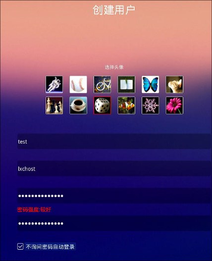
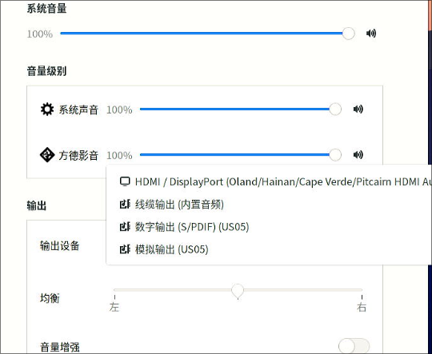
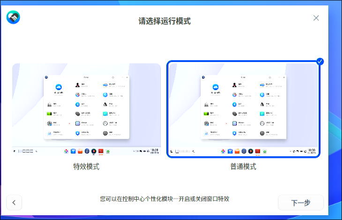
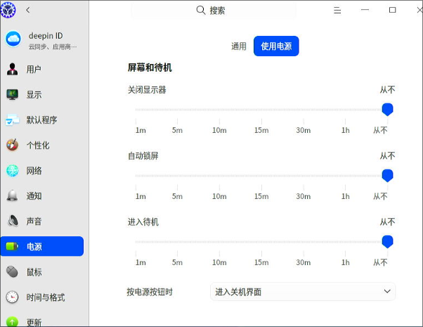
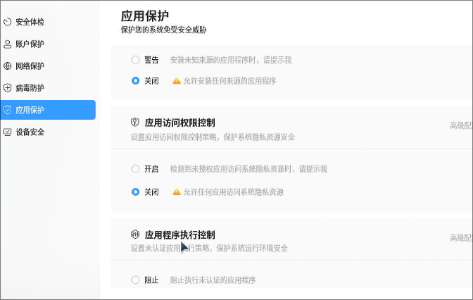
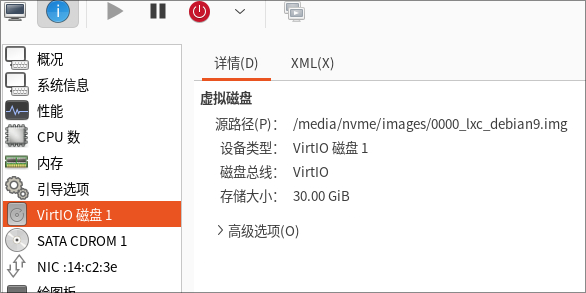
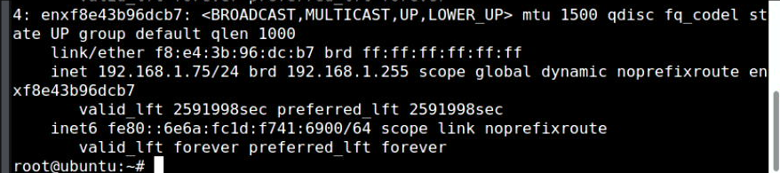
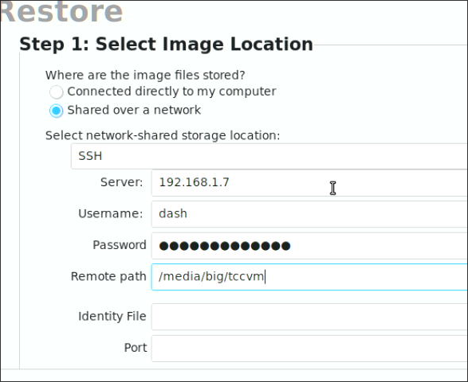
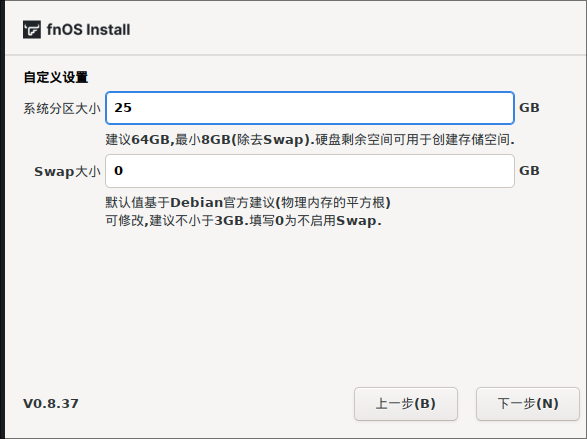
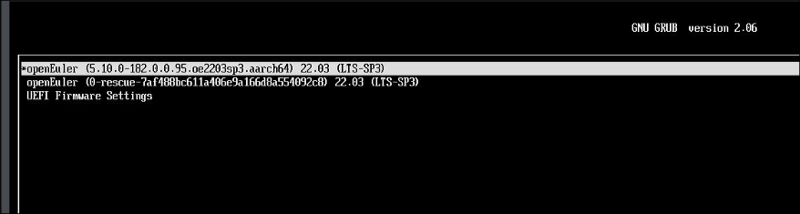

Year2025
用来记录2025年每天所做的事情，主要是技术类。
From 2025Feb06
| Date | Conclusion |
|---|---|
| 20250206 | ollama/webui, x86 lxc works |
| 20250207 | libvirt-lxc hooks, usb camera passthrough |
| 20250208 | run deepsex at home |
| 20250209 | run hyper-v based aarch64 nixos at home |
| 20250210 | upgrade ollma, gtx1660s/3050 passthrough, x86 lxc works |
| 20250211 | arm64 lxc works, mainly on d3000, deepin got issue, host is zkfd |
| 20250212 | 3a6000 lxc works, old/new world issues |
| 20250213 | 3a6000 libvirt-lxc works(need re-compile libvirt), arm64 lxc verification on d2000, mainly ok. But libvirt-lxc got issues. |
| 20250214 | meet some bugs on x86 lxc, verification. |
2025.02.06
1. Open-WebUI/Docker/Ollama
Fetch new models:
ollama run deepseek-r1:32b
ollama run huihui_ai/deepseek-r1-abliterated:32b
Configuration for ollama:
root@ai:/home/dash# cat /etc/systemd/system/ollama.service
[Unit]
Description=Ollama Service
After=network-online.target
[Service]
+ Environment="OLLAMA_HOST=0.0.0.0"
ExecStart=/usr/local/bin/ollama serve
User=ollama
Group=ollama
# systemctl daemon-reload
# systemctl restart ollama
Run docker based open-webui:
sudo docker run -d -p 3000:8080 --add-host=host.docker.internal:host-gateway -v /opt/openwebui:/app/backend/data --name openwebui --restart always ghcr.io/open-webui/open-webui:main
Then you could use the webui for calling deepseeker:

2. deepin lxc image
Download the iso and create the vm disk:
# ls /media/big/iso/deepin-desktop-community-23-amd64.iso
# qemu-img create -f raw deepin23.img 30G
Formatting 'deepin23.img', fmt=raw size=32212254720


Install with 6.6 based kernel.

Customization:


Choose "高级安装":

Ignore the swap:


After installation:
Configuration:

password-less login:

sudo visudo for use the passworld-less sudo .
sudo apt install -y openssh-server
sudo vim /etc/default/grub
Change to : GRUB_CMDLINE_LINUX_DEFAULT="quiet net.ifnames=0 biosdevname=0"
Change to : GRUB_CMDLINE_LINUX="net.ifnames=0 biosdevname=0"
sudo update-grub2
sudo update-grub
sudo apt update -y
sudo apt install -y xserver-xorg-input-evdev glmark2 smplayer
sudo reboot
Fetch the image to the folder:
sudo mount -o loop,offset=$((2048*512)) deepin23.img /mnt-resource/
sudo mkdir /media/nvme/deepinlxc
sudo rsync -av /mnt-resource/* /media/nvme/deepinlxc/
tar the file:
$ cd /media/nvme/deepinlxc
$ sudo rm -rf dev/*
$ sudo tar -cpvf deepinlxc.tar * && sudo xz -T16 deepinlxc.tar
$ ls -l -h *.tar.xz
-rw-r--r-- 1 root root 5.2G 2月 6 10:46 deepinlxc.tar.xz
3. deepin lxc instance
Create the instance via:
lxc-create -t local -n deepinlxc -- -m /root/meta.tar.xz -f /root/deepinlxc.tar.xz && cat added.conf >> /var/lib/lxc/deepinlxc/config && mkdir -p /var/lib/lxc/deepinlxc/rootfs/usr/local/bin/ && cp preX-populate-input.sh /var/lib/lxc/deepinlxc/rootfs/usr/local/bin/ && mkdir -p /var/lib/lxc/deepinlxc/rootfs/etc/X11/xorg.conf.d/ && mkdir -p /var/lib/lxc/deepinlxc/rootfs/etc/systemd/system/lightdm.service.d && cp override.conf /var/lib/lxc/deepinlxc/rootfs/etc/systemd/system/lightdm.service.d
The content of added.conf is listed as:
lxc.mount.entry = /dev/fb0 dev/fb0 none bind,optional,create=file
lxc.mount.entry = /dev/dri dev/dri none bind,optional,create=dir
lxc.mount.entry = /dev/dri/renderD128 dev/dri/renderD128 none bind,optional,create=file
### allow tty8
lxc.mount.entry = /dev/tty7 dev/tty7 none bind,optional,create=file
lxc.mount.entry = /dev/tty8 dev/tty8 none bind,optional,create=file
lxc.mount.entry = /dev/tty0 dev/tty0 none bind,optional,create=file
### allow all of the input
lxc.mount.entry = /dev/input dev/input none bind,optional,create=dir
### allow all of the snd
lxc.mount.entry = /dev/snd dev/snd none bind,optional,create=dir
Edit file:
# vim /var/lib/lxc/deepinlxc/rootfs/etc/lightdm/lightdm.conf
......
minimum-vt=8
......
# vim /var/lib/lxc/deepinlxc/config
......
lxc.apparmor.profile = unconfined
......
Or globally change the lxc config file:
$ sudo vim /etc/lxc/default.conf
......
lxc.apparmor.profile = unconfined
......
Now start the lxc instance via:
lxc-start -n deepinlxc -F

run glmarks:

glmark2 score:

webgl fish:

4. deepinlxc sound
Test video file:
cp /home/test/Desktop/wind.mp4 /var/lib/lxc/deepinlxc/rootfs/home/test/Desktop/
Default sound is null:
test@deepin:/root$ export DISPLAY=:0
test@deepin:/root$ pactl list sinks short
0 auto_null module-null-sink.c s16le 2ch 44100Hz SUSPENDED
Added an autostart desktop file under user test:
$ cat ~/.config/autostart/pactl.desktop
[Desktop Entry]
0=p
1=a
2=c
3=t
4=l
Name=pactl
Exec=sh -c '/usr/bin/pactl load-module module-alsa-card device_id=1 ; /usr/bin/pactl load-module module-alsa-card device_id=0'
Terminal=false
Type=Application
Icon=pactl
StartupWMClass=pactl
Comment=pactl
Categories=Utility
After reboot, examine the output:
test@deepin:~$ DISPLAY=:0 pactl list sinks short
1 alsa_output.0.analog-stereo module-alsa-card.c s16le 2ch 44100Hz RUNNING
5. using libvirt
Define the lxc xml:
<domain type='lxc'>
<name>deepinlxc</name>
<memory unit='KiB'>4276800</memory>
<currentMemory unit='KiB'>4276800</currentMemory>
<vcpu placement='static'>1</vcpu>
<resource>
<partition>/machine</partition>
</resource>
<os>
<type arch='x86_64'>exe</type>
<init>/lib/systemd/systemd</init>
</os>
<clock offset='utc'/>
<on_poweroff>destroy</on_poweroff>
<on_reboot>restart</on_reboot>
<on_crash>destroy</on_crash>
<devices>
<emulator>/usr/lib/libvirt/libvirt_lxc</emulator>
<filesystem type='mount' accessmode='passthrough'>
<source dir='/var/lib/lxc/deepinlxc/rootfs'/>
<target dir='/'/>
</filesystem>
<filesystem type='mount' accessmode='passthrough'>
<source dir='/dev/snd'/>
<target dir='/dev/snd'/>
</filesystem>
<filesystem type='mount' accessmode='passthrough'>
<source dir='/dev/input'/>
<target dir='/dev/input'/>
</filesystem>
<filesystem type='mount' accessmode='passthrough'>
<source dir='/dev/dri'/>
<target dir='/dev/dri'/>
</filesystem>
<interface type='network'>
<mac address='52:54:00:5f:0b:a8'/>
<source network='default'/>
</interface>
<console type='pty'>
<target type='lxc' port='0'/>
</console>
<hostdev mode='capabilities' type='misc'>
<source>
<char>/dev/dri/renderD128</char>
</source>
</hostdev>
<hostdev mode='capabilities' type='misc'>
<source>
<char>/dev/fb0</char>
</source>
</hostdev>
<hostdev mode='capabilities' type='misc'>
<source>
<char>/dev/tty8</char>
</source>
</hostdev>
<hostdev mode='capabilities' type='misc'>
<source>
<char>/dev/tty0</char>
</source>
</hostdev>
<hostdev mode='capabilities' type='misc'>
<source>
<char>/dev/dri/card0</char>
</source>
</hostdev>
<hostdev mode='capabilities' type='misc'>
<source>
<char>/dev/input/event0</char>
</source>
</hostdev>
<hostdev mode='capabilities' type='misc'>
<source>
<char>/dev/input/event1</char>
</source>
</hostdev>
<hostdev mode='capabilities' type='misc'>
<source>
<char>/dev/input/event2</char>
</source>
</hostdev>
<hostdev mode='capabilities' type='misc'>
<source>
<char>/dev/input/event3</char>
</source>
</hostdev>
<hostdev mode='capabilities' type='misc'>
<source>
<char>/dev/input/event4</char>
</source>
</hostdev>
<hostdev mode='capabilities' type='misc'>
<source>
<char>/dev/input/event5</char>
</source>
</hostdev>
<hostdev mode='capabilities' type='misc'>
<source>
<char>/dev/input/event6</char>
</source>
</hostdev>
<hostdev mode='capabilities' type='misc'>
<source>
<char>/dev/input/event7</char>
</source>
</hostdev>
<hostdev mode='capabilities' type='misc'>
<source>
<char>/dev/input/event8</char>
</source>
</hostdev>
<hostdev mode='capabilities' type='misc'>
<source>
<char>/dev/input/event9</char>
</source>
</hostdev>
<hostdev mode='capabilities' type='misc'>
<source>
<char>/dev/input/event10</char>
</source>
</hostdev>
<hostdev mode='capabilities' type='misc'>
<source>
<char>/dev/input/event11</char>
</source>
</hostdev>
<hostdev mode='capabilities' type='misc'>
<source>
<char>/dev/snd/controlC0</char>
</source>
</hostdev>
<hostdev mode='capabilities' type='misc'>
<source>
<char>/dev/snd/hwC0D0</char>
</source>
</hostdev>
<hostdev mode='capabilities' type='misc'>
<source>
<char>/dev/snd/hwC0D2</char>
</source>
</hostdev>
<hostdev mode='capabilities' type='misc'>
<source>
<char>/dev/snd/pcmC0D0c</char>
</source>
</hostdev>
<hostdev mode='capabilities' type='misc'>
<source>
<char>/dev/snd/pcmC0D0p</char>
</source>
</hostdev>
<hostdev mode='capabilities' type='misc'>
<source>
<char>/dev/snd/pcmC0D3p</char>
</source>
</hostdev>
<hostdev mode='capabilities' type='misc'>
<source>
<char>/dev/snd/pcmC0D7p</char>
</source>
</hostdev>
<hostdev mode='capabilities' type='misc'>
<source>
<char>/dev/snd/pcmC0D8p</char>
</source>
</hostdev>
<hostdev mode='capabilities' type='misc'>
<source>
<char>/dev/snd/pcmC0D9p</char>
</source>
</hostdev>
<hostdev mode='capabilities' type='misc'>
<source>
<char>/dev/snd/seq</char>
</source>
</hostdev>
<hostdev mode='capabilities' type='misc'>
<source>
<char>/dev/snd/timer</char>
</source>
</hostdev>
</devices>
</domain>
Define and run instance:
# virsh -c lxc:/// define deepin.xml
# virsh -c lxc:/// start deepinlxc
6. Automatically scan devices
Using following scripts for creating a 10-lxc-devices.xml which contains all of the misc devices used for lxc instance:
dash@archnvme:~ $ cat input.sh
#!/usr/bin/env bash
### Creates config file for virsh xml with all
# currently present input/snd/fb*/card*/renderD* devices
######################################################################
# tty8 and tty0 should be always added.
cat >/etc/10-lxc-devices.xml << _EOF_
<hostdev mode='capabilities' type='misc'>
<source>
<char>/dev/tty8</char>
</source>
</hostdev>
<hostdev mode='capabilities' type='misc'>
<source>
<char>/dev/tty0</char>
</source>
</hostdev>
_EOF_
# append all of the input devices
cd /dev/input
for input in event*
do
cat >> /etc/10-lxc-devices.xml <<_EOF_
<hostdev mode='capabilities' type='misc'>
<source>
<char>/dev/input/$input</char>
</source>
</hostdev>
_EOF_
done
# append all of the snd devices
cd /dev/snd
for snd in *
do
if [ -d $snd ]
then
:
else
cat >> /etc/10-lxc-devices.xml <<_EOF_
<hostdev mode='capabilities' type='misc'>
<source>
<char>/dev/snd/$snd</char>
</source>
</hostdev>
_EOF_
fi
done
# append all of the dri devices
cd /dev/dri
for dri in *
do
if [ -d $dri ]
then
:
else
cat >> /etc/10-lxc-devices.xml <<_EOF_
<hostdev mode='capabilities' type='misc'>
<source>
<char>/dev/dri/$dri</char>
</source>
</hostdev>
_EOF_
fi
done
# append all of the fb devices
cd /dev/
for fbdev in fb*
do
cat >> /etc/10-lxc-devices.xml <<_EOF_
<hostdev mode='capabilities' type='misc'>
<source>
<char>/dev/$fbdev</char>
</source>
</hostdev>
_EOF_
done
The 10-lxc-devices.xml should be added like:
virsh -c lxc:/// attach-device deepinlxc --file /etc/10-lxc-devices.xml --current
And this command should be added in libvirt hooks(in prepare period).
7. debian lxc host disable apparmor
Solved via:
systemctl disable apparmor
apt remove --assume-yes --purge apparmor
Using systemd-analyze blame you could detect the service startup time.
20250207
1. libvirt hook/script
Hooks:
cat /etc/libvirt/hooks/lxc
#!/bin/bash
OBJECT="$1"
OPERATION="$2"
### dom startup
if [[ $OBJECT == "test" ]]; then
case "$OPERATION" in
"prepare")
chvt 8
;;
"release")
chvt 7
;;
esac
fi
attach and detach devices via script:
root@lxcdesktop:/etc/libvirt/hooks# cat attach_dev.sh
#!/bin/sh
# attach devices to minimum xml, before the lxc instance is launched.
# Refers to `https://github.com/olavmrk/usb-libvirt-hotplug/blob/master/usb-libvirt-hotplug.sh`
DOMAIN="$1"
COMMAND='attach-device'
echo "attach tty devices"
# tty8
cat >/etc/10-lxc-devices.xml << _EOF_
<hostdev mode='capabilities' type='misc'>
<source>
<char>/dev/tty8</char>
</source>
</hostdev>
_EOF_
echo "done 1"
virsh -c lxc:/// ${COMMAND} "${DOMAIN}" --file /etc/10-lxc-devices.xml --config
echo "done 2"
# tty0
cat >/etc/10-lxc-devices.xml << _EOF_
<hostdev mode='capabilities' type='misc'>
<source>
<char>/dev/tty0</char>
</source>
</hostdev>
_EOF_
virsh -c lxc:/// ${COMMAND} "${DOMAIN}" --file /etc/10-lxc-devices.xml --config
# append all of the input devices
cd /dev/input
for input in event*
do
cat >/etc/10-lxc-devices.xml << _EOF_
<hostdev mode='capabilities' type='misc'>
<source>
<char>/dev/input/$input</char>
</source>
</hostdev>
_EOF_
virsh -c lxc:/// ${COMMAND} "${DOMAIN}" --file /etc/10-lxc-devices.xml --config
done
# append all of the snd devices
cd /dev/snd
for snd in *
do
if [ -d $snd ]
then
:
else
cat >/etc/10-lxc-devices.xml << _EOF_
<hostdev mode='capabilities' type='misc'>
<source>
<char>/dev/snd/$snd</char>
</source>
</hostdev>
_EOF_
virsh -c lxc:/// ${COMMAND} "${DOMAIN}" --file /etc/10-lxc-devices.xml --config
fi
done
# append all of the dri devices
cd /dev/dri
for dri in *
do
if [ -d $dri ]
then
:
else
cat >/etc/10-lxc-devices.xml << _EOF_
<hostdev mode='capabilities' type='misc'>
<source>
<char>/dev/dri/$dri</char>
</source>
</hostdev>
_EOF_
virsh -c lxc:/// ${COMMAND} "${DOMAIN}" --file /etc/10-lxc-devices.xml --config
fi
done
# append all of the fb devices
cd /dev/
for fbdev in fb*
do
cat >/etc/10-lxc-devices.xml << _EOF_
<hostdev mode='capabilities' type='misc'>
<source>
<char>/dev/$fbdev</char>
</source>
</hostdev>
_EOF_
virsh -c lxc:/// ${COMMAND} "${DOMAIN}" --file /etc/10-lxc-devices.xml --config
done
root@lxcdesktop:/etc/libvirt/hooks# cat detach_dev.sh
#!/bin/bash
# attach devices to minimum xml, before the lxc instance is launched.
# Refers to `https://github.com/olavmrk/usb-libvirt-hotplug/blob/master/usb-libvirt-hotplug.sh`
DOMAIN="$1"
COMMAND='detach-device'
echo "detach tty devices"
# tty8
virsh -c lxc:/// ${COMMAND} "${DOMAIN}" --config /dev/stdin <<END
<hostdev mode='capabilities' type='misc'>
<source>
<char>/dev/tty8</char>
</source>
</hostdev>
END
# tty0
virsh -c lxc:/// ${COMMAND} "${DOMAIN}" --config /dev/stdin <<END
<hostdev mode='capabilities' type='misc'>
<source>
<char>/dev/tty0</char>
</source>
</hostdev>
END
# append all of the input devices
cd /dev/input
for input in event*
do
virsh -c lxc:/// ${COMMAND} "${DOMAIN}" --config /dev/stdin <<END
<hostdev mode='capabilities' type='misc'>
<source>
<char>/dev/input/$input</char>
</source>
</hostdev>
END
done
# append all of the snd devices
cd /dev/snd
for snd in *
do
if [ -d $snd ]
then
:
else
virsh -c lxc:/// ${COMMAND} "${DOMAIN}" --config /dev/stdin <<END
<hostdev mode='capabilities' type='misc'>
<source>
<char>/dev/snd/$snd</char>
</source>
</hostdev>
END
fi
done
# append all of the dri devices
cd /dev/dri
for dri in *
do
if [ -d $dri ]
then
:
else
virsh -c lxc:/// ${COMMAND} "${DOMAIN}" --config /dev/stdin <<END
<hostdev mode='capabilities' type='misc'>
<source>
<char>/dev/dri/$dri</char>
</source>
</hostdev>
END
fi
done
# append all of the fb devices
cd /dev/
for fbdev in fb*
do
virsh -c lxc:/// ${COMMAND} "${DOMAIN}" --config /dev/stdin <<END
<hostdev mode='capabilities' type='misc'>
<source>
<char>/dev/$fbdev</char>
</source>
</hostdev>
END
done
Start the lxc instance via:
/bin/attach_dev.sh test && virsh -c lxc:/// start test
Stop the lxc instance via:
virsh -c lxc:/// destroy test && /bin/detach_dev.sh test
2. lxc usb camera
Test the usb cam in host:
apt install -y cheese
cheese
Device info:
root@lxcdesktop:~# ls /dev/bus/usb/001/010 -l
crw-rw-r-- 1 root root 189, 9 Feb 7 01:55 /dev/bus/usb/001/010
root@lxcdesktop:~# lsusb | grep -i cam
Bus 001 Device 010: ID 1bcf:2284 Sunplus Innovation Technology Inc. Full HD webcam
Undefine all of the lxc instance:
root@lxcdesktop:~# virsh -c lxc:/// undefine deepinlxc
Domain 'deepinlxc' has been undefined
root@lxcdesktop:~# virsh -c lxc:/// undefine test
Domain 'test' has been undefined
root@lxcdesktop:~# lxc-ls
deepinlxc kylinlxc
root@lxcdesktop:~# lxc-destroy -n deepinlxc
edit the common configuration(add 189 related items):
# vim /usr/share/lxc/config/common.conf
### video
lxc.cgroup.devices.allow = c 189:* rwm
lxc.cgroup.devices.allow = c 81:* rwm
### video
lxc.cgroup2.devices.allow = c 189:* rwm
lxc.cgroup2.devices.allow = c 81:* rwm
Edit the added.conf file(which will result in the lxc config files):
### allow all of the usb cam
lxc.mount.entry = /dev/bus/usb/001/010 dev/bus/usb/001/010 none bind,optional,create=dir
lxc.mount.entry = /dev/video0 dev/video0 none bind,optional,create=dir
lxc.mount.entry = /dev/video1 dev/video1 none bind,optional,create=dir
In guest run deepin-camera.
3. libvirt-lxc usb camera
Should use following two scripts: attach_cam.sh and detach_cam.sh:
root@lxcdesktop:/etc/libvirt/hooks# cat attach_cam.sh
#!/bin/sh
# attach devices to minimum xml, before the lxc instance is launched.
# Refers to `https://github.com/olavmrk/usb-libvirt-hotplug/blob/master/usb-libvirt-hotplug.sh`
DOMAIN="$1"
COMMAND='attach-device'
echo "attach cam devices"
# video0
cat >/etc/10-lxc-devices.xml << _EOF_
<hostdev mode='capabilities' type='misc'>
<source>
<char>/dev/video0</char>
</source>
</hostdev>
_EOF_
virsh -c lxc:/// ${COMMAND} "${DOMAIN}" --file /etc/10-lxc-devices.xml --config
# video1
cat >/etc/10-lxc-devices.xml << _EOF_
<hostdev mode='capabilities' type='misc'>
<source>
<char>/dev/video1</char>
</source>
</hostdev>
_EOF_
virsh -c lxc:/// ${COMMAND} "${DOMAIN}" --file /etc/10-lxc-devices.xml --config
# video1
cat >/etc/10-lxc-devices.xml << _EOF_
<hostdev mode='capabilities' type='misc'>
<source>
<char>/dev/bus/usb/001/006</char>
</source>
</hostdev>
_EOF_
virsh -c lxc:/// ${COMMAND} "${DOMAIN}" --file /etc/10-lxc-devices.xml --config
root@lxcdesktop:/etc/libvirt/hooks# cat detach_cam.sh
#!/bin/sh
# attach devices to minimum xml, before the lxc instance is launched.
# Refers to `https://github.com/olavmrk/usb-libvirt-hotplug/blob/master/usb-libvirt-hotplug.sh`
DOMAIN="$1"
COMMAND='detach-device'
echo "attach cam devices"
# video0
cat >/etc/10-lxc-devices.xml << _EOF_
<hostdev mode='capabilities' type='misc'>
<source>
<char>/dev/video0</char>
</source>
</hostdev>
_EOF_
virsh -c lxc:/// ${COMMAND} "${DOMAIN}" --file /etc/10-lxc-devices.xml --config
# video1
cat >/etc/10-lxc-devices.xml << _EOF_
<hostdev mode='capabilities' type='misc'>
<source>
<char>/dev/video1</char>
</source>
</hostdev>
_EOF_
virsh -c lxc:/// ${COMMAND} "${DOMAIN}" --file /etc/10-lxc-devices.xml --config
# video1
cat >/etc/10-lxc-devices.xml << _EOF_
<hostdev mode='capabilities' type='misc'>
<source>
<char>/dev/bus/usb/001/006</char>
</source>
</hostdev>
_EOF_
virsh -c lxc:/// ${COMMAND} "${DOMAIN}" --file /etc/10-lxc-devices.xml --config
Attach and detach the camera to running instance.
Notice: should take effect after rebooted.
20250208
1. deepsex
Fetch the model:
ollama run hf.co/ValueFX9507/Tifa-Deepsex-14b-CoT-GGUF-Q4
Run the webui:
source ~/open-webui-venv/bin/activate
AIOHTTP_CLIENT_TIMEOUT_OPENAI_MODEL_LIST=3 open-webui serve
20250209
1. laptop environment
Re-install hyper-v, wsl after windows upgrading.
Hyper-v manually installation:
file: hyperv.cmd(run as adminstrator);
pushd "%~dp0"
dir /b %SystemRoot%\servicing\Packages\*Hyper-V*.mum >hyper-v.txt
for /f %%i in ('findstr /i . hyper-v.txt 2^>nul') do dism /online /norestart /add-package:"%SystemRoot%\servicing\Packages\%%i"
del hyper-v.txt
Dism /online /enable-feature /featurename:Microsoft-Hyper-V-All /LimitAccess /ALL
After installation, the machine should be restarted.
2. hyper-v nixos aarch64
Download the iso from https://releases.nixos.org/nixos/24.11/nixos-24.11.714127.f5a32fa27df9/nixos-minimal-24.11.714127.f5a32fa27df9-aarch64-linux.iso.
Issue with minimum iso:

Change to gnome iso which is downloaded from https://releases.nixos.org/nixos/24.11/nixos-24.11.714127.f5a32fa27df9/nixos-gnome-24.11.714127.f5a32fa27df9-aarch64-linux.iso:
parted the disk:
parted /dev/sda -- mklabel gpt
parted /dev/sda -- mkpart ESP fat32 1MB 512MB
parted /dev/sda -- mkpart primary 512MB -2GB
parted /dev/sda -- mkpart swap linux-swap -2GB 100%
parted /dev/sda -- set 1 esp on
mkfs.fat -F 32 -n boot /dev/sda1
mkfs.btrfs -L NIXOS /dev/sda2
mkswap -L swap /dev/sda3
mount the formated disk:
mount /dev/disk/by-label/NIXOS /mnt
mkdir -p /mnt/boot
mount /dev/disk/by-label/boot /mnt/boot
swapon /dev/sda3
Refresh the channel:
nix-channel --add https://mirrors.ustc.edu.cn/nix-channels/nixpkgs-unstable nixpkgs
nix-channel --add https://mirrors.ustc.edu.cn/nix-channels/nixos-24.11 nixos
nix-channel --list
nix-channel --update
nixos-rebuild --option substituters https://mirrors.ustc.edu.cn/nix-channels/store switch --upgrade
Generate a basic configuration:
nixos-generate-config --root /mnt
Edit the generated configuration.nix file:
{ config, lib, pkgs, ... }:
{
imports =
[ # Include the results of the hardware scan.
./hardware-configuration.nix
];
# Use the systemd-boot EFI boot loader.
boot.loader.systemd-boot.enable = true;
boot.loader.efi.canTouchEfiVariables = true;
boot.kernelParams = [
"quiet"
"splash"
"video=hyperv_fb:1920x1080"
];
# awesome desktop wm
services={
xserver = {
enable = true;
windowManager.awesome = {
enable = true;
luaModules = with pkgs.luaPackages; [
luarocks # is the package manager for Lua modules
luadbi-mysql # Database abstraction layer
];
};
};
displayManager = {
sddm.enable = true;
defaultSession = "none+awesome";
};
};
nix.settings.substituters = [ "https://mirrors.ustc.edu.cn/nix-channels/store" ];
nixpkgs.config.allowUnfree = true;
networking.hostName = "nixos"; # Define your hostname.
time.timeZone = "Asia/Shanghai";
virtualisation.hypervGuest = {
enable = true;
};
users.mutableUsers = false; # 禁止useradd添加用户
#security.sudo.wheelNeedsPassword = false;
users.users.dash= { #用户名是yh
isNormalUser = true;
hashedPassword = "xxxxxxxxxxxxxxxxx";
extraGroups = [
"wheel"
"users"
];
};
environment.systemPackages = with pkgs; [
wget
curl
unzip
vim
];
services.openssh.enable = true;
services.pipewire = {
enable = true;
pulse.enable = true;
};
system.stateVersion = "24.11"; # Did you read the comment?
}
The hashedPassword is generated via:
mkpasswd -m sha-512
With this modified configuration file, do following:
cd /mnt
nixos-install --show-trace --option substituters https://mirror.sjtu.edu.cn/nix-channels/store
After installation, it will hints your with set passwd for root.
3. default kernel for nixos
Get from the https://github.com/NixOS/nixpkgs/blob/nixos-24.11/pkgs/top-level/linux-kernels.nix, the default kernel is:
packageAliases = {
linux_default = packages.linux_6_6;
# Update this when adding the newest kernel major version!
linux_latest = packages.linux_6_13;
linux_mptcp = throw "'linux_mptcp' has been moved to https://github.com/teto/mptcp-flake";
linux_rt_default = packages.linux_rt_5_15;
linux_rt_latest = packages.linux_rt_6_6;
};
you could switch the kernel in configuration.nix:
#boot.kernelPackages = pkgs.linuxPackages_latest;
20250210
- upgrading ollama for using 70b
- backup the ybd images using clonezilla(kx6780A & kylinv10)
- rtx 1660s(not good)/rtx 3050(good) vfio
- during vfio works, solved the rtl driver issue and systemd reboot issue.
1. upgrade ollama
issue:
llama_model_load: error loading model: done_getting_tensors: wrong number of tensors; expected 724, got 723
solved via:
curl https://ollama.ai/install.sh | sh
beware of the gfw.
2. passthrough of gtx1660s/3050
Notice: single gpu passthrough.
Bios configuration:

After reboot, only 1 card is available(no 3d controller of intel-uhd630).
$ sudo apt update -y
$ sudo apt install -y sddm awesome
$ sudo vim /etc/sddm.conf
[General]
InputMethod=
[Autologin]
User=xxx
Session=awesome
This makes the host OS autologin.
Edit the bootloader(grub):
$ sudo vim /etc/default/grub
GRUB_CMDLINE_LINUX_DEFAULT=" net.ifnames=0 biosdevname=0 ipv6.disable=1 intel_iommu=on intel_iommu=pt kvm.ignore_msrs=1"
$ sudo update-grub2 && sudo reboot
After reboot, record the iommu infos:
dash@i9server:~$ sudo ./iommu.sh
IOMMU Group 0:
00:00.0 Host bridge [0600]: Intel Corporation Comet Lake-S 6c Host Bridge/DRAM Controller [8086:9b33] (rev 05)
IOMMU Group 1:
00:01.0 PCI bridge [0604]: Intel Corporation 6th-10th Gen Core Processor PCIe Controller (x16) [8086:1901] (rev 05)
01:00.0 VGA compatible controller [0300]: NVIDIA Corporation TU116 [GeForce GTX 1660 SUPER] [10de:21c4] (rev a1)
01:00.1 Audio device [0403]: NVIDIA Corporation TU116 High Definition Audio Controller [10de:1aeb] (rev a1)
01:00.2 USB controller [0c03]: NVIDIA Corporation TU116 USB 3.1 Host Controller [10de:1aec] (rev a1)
01:00.3 Serial bus controller [0c80]: NVIDIA Corporation TU116 USB Type-C UCSI Controller [10de:1aed] (rev a1)
IOMMU Group 10:
00:1f.0 ISA bridge [0601]: Intel Corporation B460 Chipset LPC/eSPI Controller [8086:a3c8]
00:1f.2 Memory controller [0580]: Intel Corporation Memory controller [8086:a3a1]
00:1f.3 Audio device [0403]: Intel Corporation Comet Lake PCH-V cAVS [8086:a3f0]
00:1f.4 SMBus [0c05]: Intel Corporation Comet Lake PCH-V SMBus Host Controller [8086:a3a3]
IOMMU Group 2:
00:04.0 Signal processing controller [1180]: Intel Corporation Xeon E3-1200 v5/E3-1500 v5/6th Gen Core Processor Thermal Subsystem [8086:1903] (rev 05)
IOMMU Group 3:
00:08.0 System peripheral [0880]: Intel Corporation Xeon E3-1200 v5/v6 / E3-1500 v5 / 6th/7th/8th Gen Core Processor Gaussian Mixture Model [8086:1911]
IOMMU Group 4:
00:14.0 USB controller [0c03]: Intel Corporation Comet Lake PCH-V USB Controller [8086:a3af]
00:14.2 Signal processing controller [1180]: Intel Corporation Comet Lake PCH-V Thermal Subsystem [8086:a3b1]
IOMMU Group 5:
00:15.0 Signal processing controller [1180]: Intel Corporation Device [8086:a3e0]
00:15.1 Signal processing controller [1180]: Intel Corporation Device [8086:a3e1]
IOMMU Group 6:
00:16.0 Communication controller [0780]: Intel Corporation Comet Lake PCH-V HECI Controller [8086:a3ba]
IOMMU Group 7:
00:17.0 SATA controller [0106]: Intel Corporation 400 Series Chipset Family SATA AHCI Controller [8086:a382]
IOMMU Group 8:
00:1b.0 PCI bridge [0604]: Intel Corporation Comet Lake PCI Express Root Port #21 [8086:a3eb] (rev f0)
02:00.0 Non-Volatile memory controller [0108]: SK hynix Device [1c5c:1639]
IOMMU Group 9:
00:1c.0 PCI bridge [0604]: Intel Corporation Comet Lake PCI Express Root Port #05 [8086:a394] (rev f0)
00:1c.6 PCI bridge [0604]: Intel Corporation Device [8086:a396] (rev f0)
03:00.0 Ethernet controller [0200]: Realtek Semiconductor Co., Ltd. RTL8111/8168/8411 PCI Express Gigabit Ethernet Controller [10ec:8168] (rev 15)
04:00.0 Network controller [0280]: Realtek Semiconductor Co., Ltd. RTL8822CE 802.11ac PCIe Wireless Network Adapter [10ec:c822]
dash@i9server:~$ cat iommu.sh
#!/bin/bash
shopt -s nullglob
for g in /sys/kernel/iommu_groups/*; do
echo "IOMMU Group ${g##*/}:"
for d in $g/devices/*; do
echo -e "\t$(lspci -nns ${d##*/})"
done;
done;
the passthrough iommu infos:
IOMMU Group 1:
00:01.0 PCI bridge [0604]: Intel Corporation 6th-10th Gen Core Processor PCIe Controller (x16) [8086:1901] (rev 05)
01:00.0 VGA compatible controller [0300]: NVIDIA Corporation TU116 [GeForce GTX 1660 SUPER] [10de:21c4] (rev a1)
01:00.1 Audio device [0403]: NVIDIA Corporation TU116 High Definition Audio Controller [10de:1aeb] (rev a1)
01:00.2 USB controller [0c03]: NVIDIA Corporation TU116 USB 3.1 Host Controller [10de:1aec] (rev a1)
01:00.3 Serial bus controller [0c80]: NVIDIA Corporation TU116 USB Type-C UCSI Controller [10de:1aed] (rev a1)
Host kernel Changes:
dash@i9server:~$ sudo lspci | grep -i nvidia
01:00.0 VGA compatible controller: NVIDIA Corporation TU116 [GeForce GTX 1660 SUPER] (rev a1)
01:00.1 Audio device: NVIDIA Corporation TU116 High Definition Audio Controller (rev a1)
01:00.2 USB controller: NVIDIA Corporation TU116 USB 3.1 Host Controller (rev a1)
01:00.3 Serial bus controller: NVIDIA Corporation TU116 USB Type-C UCSI Controller (rev a1)
dash@i9server:~$ sudo lspci -vvnn -s 01:00.0 | grep 'Kernel driver'
Kernel driver in use: nouveau
$ sudo ubuntu-drivers autoinstall && sudo reboot
After reboot:
root@i9server:~# nvidia-smi
Mon Feb 10 03:31:38 2025
+-----------------------------------------------------------------------------------------+
| NVIDIA-SMI 550.120 Driver Version: 550.120 CUDA Version: 12.4 |
|-----------------------------------------+------------------------+----------------------+
| GPU Name Persistence-M | Bus-Id Disp.A | Volatile Uncorr. ECC |
| Fan Temp Perf Pwr:Usage/Cap | Memory-Usage | GPU-Util Compute M. |
| | | MIG M. |
|=========================================+========================+======================|
| 0 NVIDIA GeForce GTX 1660 ... Off | 00000000:01:00.0 On | N/A |
| 25% 38C P8 5W / 125W | 32MiB / 6144MiB | 0% Default |
| | | N/A |
+-----------------------------------------+------------------------+----------------------+
+-----------------------------------------------------------------------------------------+
| Processes: |
| GPU GI CI PID Type Process name GPU Memory |
| ID ID Usage |
|=========================================================================================|
| 0 N/A N/A 1412 G /usr/lib/xorg/Xorg 29MiB |
+-----------------------------------------------------------------------------------------+
root@i9server:~# uname -a
Linux i9server 6.8.0-52-generic #53~22.04.1-Ubuntu SMP PREEMPT_DYNAMIC Wed Jan 15 19:18:46 UTC 2 x86_64 x86_64 x86_64 GNU/Linux
root@i9server:~# lspci -vvnn -s 01:00.0 | grep -i 'Kernel driver in use'
Kernel driver in use: nvidia
Prepare the qcow2 file:
root@i9server:/var/lib/libvirt/trueimages# qemu-img create -f qcow2 -b /var/lib/libvirt/images/little_win10.qcow2 -F qcow2 win10.qcow2

Uefi:

Examine the image via following configration, in guest open rdp support:

unzip the nvflash:
root@i9server:~/nv# unzip ../nvflash_5.833_linux.zip
Archive: ../nvflash_5.833_linux.zip
inflating: nvflash
# chmod 777 *
stop the wm and remove all of the nvidia kernel modules:
root@i9server:~/nv# systemctl stop sddm
root@i9server:~/nv# rmmod nvidia_uvm
root@i9server:~/nv# rmmod nvidia_drm
root@i9server:~/nv# rmmod nvidia_modeset
root@i9server:~/nv# rmmod nvidia
root@i9server:~/nv# lsmod | grep -i nvidia
Do following commands:
# vim /etc/modprobe.d/blacklist.conf
...
blacklist nvidia
blacklist nvidia_uvm
blacklist nvidia_drm
blacklist nvidia_modeset
# systemctl disable sddm && update-initramfs -u -k all && reboot
After reboot, you could get the vbios:
root@i9server:~/nv# !562
./nvflash --save vbios.rom
NVIDIA Firmware Update Utility (Version 5.833.0)
Copyright (C) 1993-2023, NVIDIA Corporation. All rights reserved.
Reading EEPROM (this operation may take up to 30 seconds)
Build GUID : 0F08611866994AA3AE3C9DDECB2F1133
Build Number : 27860314
IFR Subsystem ID : 1462-3797
Subsystem Vendor ID : 0x1462
Subsystem ID : 0x3797
Version : 90.16.4D.00.44
Image Hash : 7CBA24A9C1C226BF5639D038B066AF37
Hierarchy ID : Normal Board
Build Date : 01/10/20
Modification Date : 03/11/20
UEFI Version : 0x50014 ( x64 )
UEFI Variant ID : 0x0000000000000009 ( TU1xx )
UEFI Signer(s) : Microsoft Corporation UEFI CA 2011
XUSB-FW Version ID : 0x71030001
XUSB-FW Build Time : 2019-05-16 18:12:54
InfoROM Version : G001.0000.02.04
InfoROM Backup : Present
License Placeholder : Present
GPU Mode : N/A
CEC OTA-signed Blob : Not Present
Reading EEPROM (this operation may take up to 30 seconds)
root@i9server:~/nv# ls
nvflash vbios.rom
root@i9server:~/nv# ls -l -h vbios.rom
-rw-r--r-- 1 root root 1023K Feb 10 03:58 vbios.rom
Using okteta for patching the vbios :

Install driver under qxl display:


BIOS configuration, stop csm:
GTX1660 failed to show gop animation, while 3050 will work normaly.
Both card could be working.
3. r8168 driver issue
Solved via:
# apt install -y linux-headers-6.8.0-52-generic dkms
# tar xjvf r8168-8.055.00.tar.bz2
# cd r8168-8.055.00/src
# mkdir /usr/src/r8168-8.055.00
# cp -v * /usr/src/r8168-8.055.00/
# vim /usr/src/r8168-8.055.00/dkms.conf
PACKAGE_NAME="r8168"
PACKAGE_VERSION="8.055.00"
BUILT_MODULE_NAME[0]="$PACKAGE_NAME"
DEST_MODULE_LOCATION[0]="/updates/dkms"
AUTOINSTALL="YES"
REMAKE_INITRD="YES"
# dkms add r8168/8.055.00
# dkms build r8168/8.055.00 -k 6.8.0-52-generic
# dkms install r8168/8.055.00 -k 6.8.0-52-generic
# dkms status
r8168/8.055.00, 6.8.0-52-generic, x86_64: installed
4. systemd reboot hang
Solved via:
# vim /etc/systemd/system.conf
...
[Manager]
...
DefaultTimeoutStopSec=10s
...
# systemctl daemon-reload
5. workable win10 xml(3050)
Video link: https://www.youtube.com/watch?v=MYj8YyW1D0M
https://www.youtube.com/watch?v=MYj8YyW1D0M
Following is the win10 xml.
<domain type='kvm' id='2'>
<name>win10</name>
<uuid>02581d87-979e-443e-840c-8af7202d6c18</uuid>
<metadata>
<libosinfo:libosinfo xmlns:libosinfo="http://libosinfo.org/xmlns/libvirt/domain/1.0">
<libosinfo:os id="http://microsoft.com/win/10"/>
</libosinfo:libosinfo>
</metadata>
<memory unit='KiB'>8388608</memory>
<currentMemory unit='KiB'>8388608</currentMemory>
<vcpu placement='static'>8</vcpu>
<resource>
<partition>/machine</partition>
</resource>
<os>
<type arch='x86_64' machine='pc-q35-6.2'>hvm</type>
<loader readonly='yes' type='pflash'>/usr/share/OVMF/OVMF_CODE_4M.ms.fd</loader>
<nvram template='/usr/share/OVMF/OVMF_VARS_4M.ms.fd'>/var/lib/libvirt/qemu/nvram/win10_VARS.fd</nvram>
<boot dev='hd'/>
</os>
<features>
<acpi/>
<apic/>
<hyperv mode='custom'>
<relaxed state='on'/>
<vapic state='on'/>
<spinlocks state='on' retries='8191'/>
<vendor_id state='on' value='123456789123'/>
</hyperv>
<kvm>
<hidden state='on'/>
</kvm>
<vmport state='off'/>
<smm state='on'/>
<ioapic driver='kvm'/>
</features>
<cpu mode='host-passthrough' check='none' migratable='on'>
<topology sockets='1' dies='1' cores='4' threads='2'/>
</cpu>
<clock offset='localtime'>
<timer name='rtc' tickpolicy='catchup'/>
<timer name='pit' tickpolicy='delay'/>
<timer name='hpet' present='no'/>
<timer name='hypervclock' present='yes'/>
</clock>
<on_poweroff>destroy</on_poweroff>
<on_reboot>restart</on_reboot>
<on_crash>destroy</on_crash>
<pm>
<suspend-to-mem enabled='no'/>
<suspend-to-disk enabled='no'/>
</pm>
<devices>
<emulator>/usr/bin/qemu-system-x86_64</emulator>
<disk type='file' device='disk'>
<driver name='qemu' type='qcow2'/>
<source file='/var/lib/libvirt/trueimages/win10.qcow2' index='1'/>
<backingStore type='file' index='2'>
<format type='qcow2'/>
<source file='/var/lib/libvirt/images/little_win10.qcow2'/>
<backingStore/>
</backingStore>
<target dev='sda' bus='sata'/>
<alias name='sata0-0-0'/>
<address type='drive' controller='0' bus='0' target='0' unit='0'/>
</disk>
<controller type='usb' index='0' model='qemu-xhci' ports='15'>
<alias name='usb'/>
<address type='pci' domain='0x0000' bus='0x02' slot='0x00' function='0x0'/>
</controller>
<controller type='pci' index='0' model='pcie-root'>
<alias name='pcie.0'/>
</controller>
<controller type='pci' index='1' model='pcie-root-port'>
<model name='pcie-root-port'/>
<target chassis='1' port='0x10'/>
<alias name='pci.1'/>
<address type='pci' domain='0x0000' bus='0x00' slot='0x02' function='0x0' multifunction='on'/>
</controller>
<controller type='pci' index='2' model='pcie-root-port'>
<model name='pcie-root-port'/>
<target chassis='2' port='0x11'/>
<alias name='pci.2'/>
<address type='pci' domain='0x0000' bus='0x00' slot='0x02' function='0x1'/>
</controller>
<controller type='pci' index='3' model='pcie-root-port'>
<model name='pcie-root-port'/>
<target chassis='3' port='0x12'/>
<alias name='pci.3'/>
<address type='pci' domain='0x0000' bus='0x00' slot='0x02' function='0x2'/>
</controller>
<controller type='pci' index='4' model='pcie-root-port'>
<model name='pcie-root-port'/>
<target chassis='4' port='0x13'/>
<alias name='pci.4'/>
<address type='pci' domain='0x0000' bus='0x00' slot='0x02' function='0x3'/>
</controller>
<controller type='pci' index='5' model='pcie-root-port'>
<model name='pcie-root-port'/>
<target chassis='5' port='0x14'/>
<alias name='pci.5'/>
<address type='pci' domain='0x0000' bus='0x00' slot='0x02' function='0x4'/>
</controller>
<controller type='pci' index='6' model='pcie-root-port'>
<model name='pcie-root-port'/>
<target chassis='6' port='0x15'/>
<alias name='pci.6'/>
<address type='pci' domain='0x0000' bus='0x00' slot='0x02' function='0x5'/>
</controller>
<controller type='pci' index='7' model='pcie-root-port'>
<model name='pcie-root-port'/>
<target chassis='7' port='0x16'/>
<alias name='pci.7'/>
<address type='pci' domain='0x0000' bus='0x00' slot='0x02' function='0x6'/>
</controller>
<controller type='pci' index='8' model='pcie-root-port'>
<model name='pcie-root-port'/>
<target chassis='8' port='0x17'/>
<alias name='pci.8'/>
<address type='pci' domain='0x0000' bus='0x00' slot='0x02' function='0x7'/>
</controller>
<controller type='pci' index='9' model='pcie-root-port'>
<model name='pcie-root-port'/>
<target chassis='9' port='0x18'/>
<alias name='pci.9'/>
<address type='pci' domain='0x0000' bus='0x00' slot='0x03' function='0x0' multifunction='on'/>
</controller>
<controller type='pci' index='10' model='pcie-root-port'>
<model name='pcie-root-port'/>
<target chassis='10' port='0x19'/>
<alias name='pci.10'/>
<address type='pci' domain='0x0000' bus='0x00' slot='0x03' function='0x1'/>
</controller>
<controller type='pci' index='11' model='pcie-root-port'>
<model name='pcie-root-port'/>
<target chassis='11' port='0x1a'/>
<alias name='pci.11'/>
<address type='pci' domain='0x0000' bus='0x00' slot='0x03' function='0x2'/>
</controller>
<controller type='pci' index='12' model='pcie-root-port'>
<model name='pcie-root-port'/>
<target chassis='12' port='0x1b'/>
<alias name='pci.12'/>
<address type='pci' domain='0x0000' bus='0x00' slot='0x03' function='0x3'/>
</controller>
<controller type='pci' index='13' model='pcie-root-port'>
<model name='pcie-root-port'/>
<target chassis='13' port='0x1c'/>
<alias name='pci.13'/>
<address type='pci' domain='0x0000' bus='0x00' slot='0x03' function='0x4'/>
</controller>
<controller type='pci' index='14' model='pcie-root-port'>
<model name='pcie-root-port'/>
<target chassis='14' port='0x1d'/>
<alias name='pci.14'/>
<address type='pci' domain='0x0000' bus='0x00' slot='0x03' function='0x5'/>
</controller>
<controller type='sata' index='0'>
<alias name='ide'/>
<address type='pci' domain='0x0000' bus='0x00' slot='0x1f' function='0x2'/>
</controller>
<controller type='virtio-serial' index='0'>
<alias name='virtio-serial0'/>
<address type='pci' domain='0x0000' bus='0x03' slot='0x00' function='0x0'/>
</controller>
<interface type='bridge'>
<mac address='52:54:00:e7:c3:8b'/>
<source bridge='br0'/>
<target dev='vnet1'/>
<model type='e1000e'/>
<alias name='net0'/>
<address type='pci' domain='0x0000' bus='0x01' slot='0x00' function='0x0'/>
</interface>
<serial type='pty'>
<source path='/dev/pts/1'/>
<target type='isa-serial' port='0'>
<model name='isa-serial'/>
</target>
<alias name='serial0'/>
</serial>
<console type='pty' tty='/dev/pts/1'>
<source path='/dev/pts/1'/>
<target type='serial' port='0'/>
<alias name='serial0'/>
</console>
<channel type='spicevmc'>
<target type='virtio' name='com.redhat.spice.0' state='disconnected'/>
<alias name='channel0'/>
<address type='virtio-serial' controller='0' bus='0' port='1'/>
</channel>
<input type='tablet' bus='usb'>
<alias name='input0'/>
<address type='usb' bus='0' port='1'/>
</input>
<input type='mouse' bus='ps2'>
<alias name='input1'/>
</input>
<input type='keyboard' bus='ps2'>
<alias name='input2'/>
</input>
<sound model='ich9'>
<alias name='sound0'/>
<address type='pci' domain='0x0000' bus='0x00' slot='0x1b' function='0x0'/>
</sound>
<audio id='1' type='none'/>
<hostdev mode='subsystem' type='pci' managed='yes'>
<driver name='vfio'/>
<source>
<address domain='0x0000' bus='0x01' slot='0x00' function='0x0'/>
</source>
<alias name='hostdev0'/>
<rom file='/usr/share/vgabios/GA106.rom'/>
<address type='pci' domain='0x0000' bus='0x05' slot='0x00' function='0x0'/>
</hostdev>
<hostdev mode='subsystem' type='pci' managed='yes'>
<driver name='vfio'/>
<source>
<address domain='0x0000' bus='0x01' slot='0x00' function='0x1'/>
</source>
<alias name='hostdev1'/>
<address type='pci' domain='0x0000' bus='0x06' slot='0x00' function='0x0'/>
</hostdev>
<hostdev mode='subsystem' type='usb' managed='yes'>
<source>
<vendor id='0x30fa'/>
<product id='0x0300'/>
<address bus='1' device='4'/>
</source>
<alias name='hostdev2'/>
<address type='usb' bus='0' port='4'/>
</hostdev>
<hostdev mode='subsystem' type='usb' managed='yes'>
<source>
<vendor id='0x1a2c'/>
<product id='0x0e24'/>
<address bus='1' device='3'/>
</source>
<alias name='hostdev3'/>
<address type='usb' bus='0' port='5'/>
</hostdev>
<redirdev bus='usb' type='spicevmc'>
<alias name='redir0'/>
<address type='usb' bus='0' port='2'/>
</redirdev>
<redirdev bus='usb' type='spicevmc'>
<alias name='redir1'/>
<address type='usb' bus='0' port='3'/>
</redirdev>
<memballoon model='virtio'>
<alias name='balloon0'/>
<address type='pci' domain='0x0000' bus='0x04' slot='0x00' function='0x0'/>
</memballoon>
</devices>
<seclabel type='dynamic' model='dac' relabel='yes'>
<label>+64055:+108</label>
<imagelabel>+64055:+108</imagelabel>
</seclabel>
</domain>
6. quicksetup-lxcdesktop
6.1 host setup
host setup Steps:
Change repository
# apt update
# apt install -y vim
# vim /etc/lightdm/lightdm.conf
autologin-user=test
autologin-user-timeout=0
#autologin-in-background=false
autologin-session=mate
# apt upgrade -y && apt install -y iotop vim nethogs s-tui libvirt-daemon-driver-lxc virt-manager lxc lxc-templates lxcfs smplayer
# vim /etc/subuid /etc/subgid(both are the same)
test:100000:65536
root:100000:65536
# apt install -y xserver-xorg-video-amdgpu firmware-amd-graphics libdrm-amdgpu1 firmware-linux firmware-linux-nonfree
# reboot
Check the graphical info:
root@debian:~# lspci -vvnn -s 06:00.0 | grep -i 'kernel driver'
Kernel driver in use: amdgpu
root@debian:~# lspci -nn | grep -i vga
06:00.0 VGA compatible controller [0300]: Advanced Micro Devices, Inc. [AMD/ATI] Lexa PRO [Radeon 540/540X/550/550X / RX 540X/550/550X] [1002:699f] (rev c7)
Check the audio info:
test@debian:~$ export DISPLAY=:0
test@debian:~$ pactl list sinks short
0 alsa_output.pci-0000_06_00.1.hdmi-stereo-extra3 module-alsa-card.c s16le 2ch 44100Hz SUSPENDED
1 alsa_output.usb-Hifi_384Khz_Type-C_Audio_Audio_fs_2.0_2021-11-11-0000-0000-0000-00.analog-stereo module-alsa-card.c s16le 2ch 48000Hz RUNNING
edit the lxc default :
# vim /etc/lxc/default.conf
lxc.apparmor.profile = unconfined
disable and totally remove apparmor:
# systemctl disable apparmor
# apt remove --assume-yes --purge apparmor
common configuration files:
cp /usr/share/lxc/config/common.conf /usr/share/lxc/config/common.conf.back
Copy the template common.conf from my github.
6.2 deepin lxc
Quickly launch:
# lxc-create -t local -n deepinlxc -- -m /root/meta.tar.xz -f /root/deepinlxc.tar.xz && cat added.conf >> /var/lib/lxc/deepinlxc/config && mkdir -p /var/lib/lxc/deepinlxc/rootfs/usr/local/bin/ && cp preX-populate-input.sh /var/lib/lxc/deepinlxc/rootfs/usr/local/bin/ && mkdir -p /var/lib/lxc/deepinlxc/rootfs/etc/X11/xorg.conf.d/ && mkdir -p /var/lib/lxc/deepinlxc/rootfs/etc/systemd/system/lightdm.service.d && cp override.conf /var/lib/lxc/deepinlxc/rootfs/etc/systemd/system/lightdm.service.d
# vim /var/lib/lxc/deepinlxc/rootfs/etc/lightdm/lightdm.conf
minimum-vt=8
# cp /root/wind.mp4 /var/lib/lxc/deepinlxc/rootfs/home/test/Desktop/
# lxc-start -n deepinlxc -F
Sound:
root@debian:~# lxc-attach -n deepinlxc
root@deepin:~# su test
test@deepin:/root$ vim ~/.config/autostart/pactl.desktop
test@deepin:/root$ sudo reboot
Now it will be OK.
6.2. zkfd lxc
Create:
lxc-create -t local -n zkfdlxc -- -m /root/meta.tar.xz -f /root/zkfdlxc.tar.xz
mv /var/lib/lxc/zkfdlxc/rootfs/etc/acpi /var/lib/lxc/zkfdlxc/rootfs/etc/acpi.bak
cat added.conf >> /var/lib/lxc/zkfdlxc/config && mkdir -p /var/lib/lxc/zkfdlxc/rootfs/usr/local/bin/ && cp preX-populate-input.sh /var/lib/lxc/zkfdlxc/rootfs/usr/local/bin/ && mkdir -p /var/lib/lxc/zkfdlxc/rootfs/etc/X11/xorg.conf.d/ && mkdir -p /var/lib/lxc/zkfdlxc/rootfs/etc/systemd/system/lightdm.service.d && cp override.conf /var/lib/lxc/zkfdlxc/rootfs/etc/systemd/system/lightdm.service.d
# vim /var/lib/lxc/zkfdlxc/rootfs/etc/lightdm/lightdm.conf
minimum-vt=8
Change the user's passwd(30 days):
root@debian:~# lxc-attach -n zkfdlxc
root@zkfdlxc:~# passwd test
New password:
Retype new password:
passwd: password updated successfully
root@zkfdlxc:~# reboot
Test the audio:
cp wind.mp4 /var/lib/lxc/zkfdlxc/rootfs/home/tes桌面/
sudo dhclient eth0
sudo apt install -y smplayer
mkdir -p ~/.config/autostart
vim ~/.config/autostart/pactl.desktop
Change the sound:
6.3 uoslxc(kodi modifed)
Create via:
lxc-create -t local -n uoslxc -- -m /root/meta.tar.xz -f /root/uoslxc.tar.xz
cat added.conf >> /var/lib/lxc/uoslxc/config && mkdir -p /var/lib/lxc/uoslxc/rootfs/usr/local/bin/ && cp preX-populate-input.sh /var/lib/lxc/uoslxc/rootfs/usr/local/bin/ && mkdir -p /var/lib/lxc/uoslxc/rootfs/etc/X11/xorg.conf.d/ && mkdir -p /var/lib/lxc/uoslxc/rootfs/etc/systemd/system/lightdm.service.d && cp override.conf /var/lib/lxc/uoslxc/rootfs/etc/systemd/system/lightdm.service.d

Since this image is only for testing kodi, ignore it.
6.4 uoslxcdesktop
Create via:
# lxc-create -t local -n uoslxcdesktop -- -m /root/meta.tar.xz -f uoslxcdesktop.tar.xz
# cat added.conf >> /var/lib/lxc/uoslxcdesktop/config && mkdir -p /var/lib/lxc/uoslxcdesktop/rootfs/usr/local/bin/ && cp preX-populate-input.sh /var/lib/lxc/uoslxcdesktop/rootfs/usr/local/bin/ && mkdir -p /var/lib/lxc/uoslxcdesktop/rootfs/etc/X11/xorg.conf.d/ && mkdir -p /var/lib/lxc/uoslxcdesktop/rootfs/etc/systemd/system/lightdm.service.d && cp override.conf /var/lib/lxc/uoslxcdesktop/rootfs/etc/systemd/system/lightdm.service.d
# vim /var/lib/lxc/uoslxcdesktop/rootfs/etc/lightdm/lightdm.conf
minimum-vt=8
Directly copy from other lxc:
root@debian:/var/lib/lxc/uoslxcdesktop/rootfs/home/test/.config/autostart# cp /var/lib/lxc/deepinlxc/rootfs/home/test/.config/autostart/pactl.desktop .
root@debian:/var/lib/lxc/uoslxcdesktop/rootfs/home/test/.config/autostart# pwd
/var/lib/lxc/uoslxcdesktop/rootfs/home/test/.config/autostart
Comment the /etc/fstab in container:
root@uoslxc:~# cat /etc/fstab
# /dev/vda2
#UUID=4edf73b8-87f7-4ba1-99a4-e3306afade89 / ext4 rw,relatime 0 1
# /dev/vda1
#UUID=20720be2-6c80-4e1f-ab73-ab0da9714e99 /boot ext4 rw,relatime 0 2
Start via lxc-start -n uoslxcdesktop -F:

20250211
Mainly working on arm64 lxc desktop .
arm workable items:
# ls arm64_workable_20250211/
added.conf kylinpulse.tar.xz preX-populate-input.sh zkfdpulse.tar.xz
kkk.sh override.conf uoslxc.tar.xz
root@lxchost:~# scp -r arm64_workable_20250211/ dash@192.168.1.7:/media/big/
1. lxc(kylinlxc)
Create via:
lxc-create -t local -n kylinlxc -- -m /root/meta.tar.xz -f /root/kylinlxc.tar.xz
cat added.conf >> /var/lib/lxc/kylinlxc/config && mkdir -p /var/lib/lxc/kylinlxc/rootfs/usr/local/bin/ && cp preX-populate-input.sh /var/lib/lxc/kylinlxc/rootfs/usr/local/bin/ && mkdir -p /var/lib/lxc/kylinlxc/rootfs/etc/X11/xorg.conf.d/ && mkdir -p /var/lib/lxc/kylinlxc/rootfs/etc/systemd/system/lightdm.service.d && cp override.conf /var/lib/lxc/kylinlxc/rootfs/etc/systemd/system/lightdm.service.d
vim /var/lib/lxc/kylinlxc/rootfs/etc/lightdm/lightdm.conf
Added:
[LightDM]
minimum-vt=8
mkdir -p /var/lib/lxc/kylinlxc/rootfs/home/test/.config/autostart/
cp /var/lib/lxc/uoslxcdesktop/rootfs/home/test/.config/autostart/pactl.desktop /var/lib/lxc/kylinlxc/rootfs/home/test/.config/autostart/
chmod 777 -R /var/lib/lxc/kylinlxc/rootfs/home/test/.config/autostart/
lxc-start -n kylinlxc -F
cp wind.mp4 /var/lib/lxc/kylinlxc/rootfs/home/tes桌面/
Everything will be ok,including video/audio..
2. Backup Release
Backup release for x86 lxc:
root@debian:~# ls
added.conf kk.sh kylinlxc.tar.xz override.conf uoslxc.tar.xz wind.mp4
deepinlxc.tar.xz kkk.sh meta.tar.xz preX-populate-input.sh uoslxcdesktop.tar.xz zkfdlxc.tar.xz
root@debian:~# mkdir x86_lxc_20250211
root@debian:~# mv * x86_lxc_20250211/
root@debian:~# scp -r x86_lxc_20250211/ dash@192.168.1.7:/media/big/
3. arm64 lxchost
OS Installation:


Install the system via livecd.
Partition:


passwd-less login:

Never lock screen:


audio problem(use usb audio for output):

Install packages:
sudo apt update -y && sudo apt install -y iotop vim nethogs s-tui libvirt-daemon-driver-lxc virt-manager lxc lxc-templates lxcfs smplayer
sudo reboot
sudo systemctl enable ssh && sudo systemctl start ssh
sudo ufw disable
$ cat /etc/subuid /etc/subgid
test:100000:65536
root:100000:65536
test:100000:65536
root:100000:65536
# systemctl disable apparmor
# apt remove --assume-yes --purge apparmor
# vim /etc/lxc/default.conf
lxc.apparmor.profile = unconfined
Edit the config file then save:
test@lxchost:~$ sudo vim /usr/share/lxc/config/common.conf
test@lxchost:~$ scp -P21322 /usr/share/lxc/config/common.conf dash@yqnyjy.ddns.net:~/common.conf.zkfdarm64
Copy all of the lxcarm images to root directory:
$ ls
all.txt kylinv10arm.tar.xz uoslxc.tar.xz
history.txt meta.tar.xz zkfdlxc.tar.xz
$ sudo cp *.tar.xz /root/
$ cd /root, copy the sh files and conf files from my git repo
added.conf kkk.sh override.conf preX-populate-input.sh
add crontab:
@reboot chmod 777 /dev/tty* && chmod 777 /dev/fb* && chmod 777 -R /dev/dri/* && chmod 777 -R /dev/snd/* && chmod 777 -R /dev/input/*
4. kylinlxc
Include making images and run.
In vm:
sudo apt udpate -y && sudo apt install -y openssh-server


security related:
$ setstatus disable -p
$ sudo vim /etc/default/grub
GRUB_CMDLINE_LINUX_DEFAULT="quiet splash loglevel=0 net.ifnames=0 biosdevname=0"
GRUB_CMDLINE_LINUX_SECURITY=""
$ sudo update-grub2
$ sudo apt install -y smplayer glmark2
$ sudo reboot
$ sudo shutdown -h now
Extract the files:
cp kylinraw.img kylinraw.img.def_pulseaudio
losetup -f -P kylinraw.img.def_pulseaudio
# mount /dev/loop1p2 /mnt-resource/
# mount /dev/loop1p1 /mnt-resource/boot/efi/
# df -h
...
/dev/loop1p2 30G 9.4G 19G 34% /mnt-resource
/dev/loop1p1 253M 18M 235M 7% /mnt-resource/boot/efi
# mkdir /root/kl
# rsync -av /mnt-resource/* /root/kl/
# cd /root/kl
# vim etc/fstab
# rm -rf dev/*
# vim etc/lightdm/lightdm.conf
[LightDM]
minimum-vt=8
......
Should use system level pulseaudio, (optional systemd pulseaudio):
test@kylin:~$ sudo vim /etc/pulse/client.conf
autospawn = no
test@kylin:~$ systemctl --user disable pulseaudio.service pulseaudio.socket
test@kylin:~$ sudo systemctl --global disable pulseaudio.service pulseaudio.socket
test@kylin:~$ sudo mv /lib/systemd/user/pulseaudio.s* .
test@kylin:~$ sudo mv /etc/xdg/autostart/pulseaudio.desktop .
test@kylin:~$ sudo usermod -aG pulse-access root
test@kylin:~$ sudo usermod -aG pulse-access test
test@kylin:~$ sudo usermod -aG pulse test
test@kylin:~$ sudo usermod -aG audio test
test@kylin:~$ sudo vim /etc/systemd/system/pulseaudio.service
test@kylin:~$ sudo systemctl enable pulseaudio
Created symlink /etc/systemd/system/default.target.wants/pulseaudio.service → /etc/systemd/system/pulseaudio.service.
The workable lxc image is kylinpulse.tar.xz.
lxc-create -t local -n kylinpulse -- -m /root/meta.tar.xz -f /root/kylinpulse.tar.xz
cat added.conf >> /var/lib/lxc/kylinpulse/config && mkdir -p /var/lib/lxc/kylinpulse/rootfs/usr/local/bin && cp preX-populate-input.sh /var/lib/lxc/kylinpulse/rootfs/usr/local/bin/ && mkdir -p /var/lib/lxc/kylinpulse/rootfs/etc/X11/xorg.conf.d/ && mkdir -p /var/lib/lxc/kylinpulse/rootfs/etc/systemd/system/lightdm.service.d && cp override.conf /var/lib/lxc/kylinpulse/rootfs/etc/systemd/system/lightdm.service.d
lxc-start -n kylinpulse
5. zkfd(image&testing)
Edit grub:
$ sudo vim /etc/default/grub
GRUB_CMDLINE_LINUX_DEFAULT="quiet splash resume=UUID=357de008-1923-459c-a854-c835816c8667 net.ifnames=0 biosdevname=0"
$ sudo update-grub2
$ sudo systemctl enable ssh
Edit system-level pulseaudio:
sudo vim /etc/pulse/client.conf
sudo systemctl --user disable pulseaudio.service pulseaudio.socket
sudo systemctl --global disable pulseaudio.service pulseaudio.socket
sudo mv /lib/systemd/user/pulseaudio.s* .
sudo mv /etc/xdg/autostart/pulseaudio.desktop .
sudo usermod -aG pulse-access root
sudo usermod -aG pulse-access test
sudo usermod -aG audio test
systemctl --user disable pipewire.service pipewire.socket
sudo systemctl --user disable pipewire.service pipewire.socket
sudo systemctl --global disable pipewire.service pipewire.socket
sudo mv /lib/systemd/user/pipewire.s* .
sudo vim /etc/systemd/system/pulseaudio.service
sudo systemctl enable pulseaudio
Disable the screen-lock, firewall, selinux related items.
rsync the items to folder:
# vim etc/lightdm/lightdm.conf
minimum-vt=8
# vim etc/fstab
# vim etc/systemd/system/pulseaudio.service
[Unit]
Description=Sound Service
After=multi-user.target
[Service]
# Note that notify will only work if --daemonize=no
Type=notify
ExecStart=/usr/bin/pulseaudio --daemonize=no --exit-idle-time=-1 --disallow-exit=true --system --disallow-module-loading
Restart=always
[Install]
WantedBy=default.target
# rm -f home/test/.config/autostart/pactl.desktop
# tar -cpvf zkfdpulse.tar * && xz -T8 zkfdpulse.tar
Create and test:
# lxc-create -t local -n zkfdpulse -- -m /root/meta.tar.xz -f /root/zkfdpulse.tar.xz
# cat added.conf >> /var/lib/lxc/zkfdpulse/config && mkdir -p /var/lib/lxc/zkfdpulse/rootfs/usr/local/bin && cp preX-populate-input.sh /var/lib/lxc/zkfdpulse/rootfs/usr/local/bin/ && mkdir -p /var/lib/lxc/zkfdpulse/rootfs/etc/X11/xorg.conf.d/ && mkdir -p /var/lib/lxc/zkfdpulse/rootfs/etc/systemd/system/lightdm.service.d && cp override.conf /var/lib/lxc/zkfdpulse/rootfs/etc/systemd/system/lightdm.service.d
root@lxchost:~# lxc-start -n zkfdpulse
root@lxchost:~# cp /home/test/桌面/wind.mp4 /var/lib/lxc/zkfdpulse/rootfs/home/test/桌面/
video/audio both works well.
6. deepinlxc
Install deepinlxc:


Configuration of guest os:



no effect for update grub:
$ sudo apt update && sudo apt install -y openssh-server && sudo systemctl enable ssh
$ sudo vim /etc/default/grub
GRUB_CMDLINE_LINUX_DEFAULT="quiet splash loglevel=0 net.ifnames=0 biosdevname=0"
$ sudo update-grub2 && sudo update-grub && sudo reboot
sync the content:
# mount /dev/loop3p2 /mnt-resource/
# mount /dev/loop3p1 /mnt-resource/boot/efi/
# mkdir /root/deepinlxc
# history | grep rsync
# rsync -av /mnt-resource/* /root/deepinlxc
# cd /root/deepinlxc
# tar cpvf deepinlxc * && xz -T8 deepinlxc.tar
Test and verification.
Issue(lightdm):
└─592 /usr/bin/fcitx5 -d
2月 12 08:53:20 deepin lightdm[445]: gkr-pam: gnome-keyring-daemon started properly and unlocked keyring
2月 12 08:53:20 deepin lightdm[445]: Failed to open CK session: GDBus.Error:org.freedesktop.DBus.Error.ServiceUnknown: The name org.freedesktop.ConsoleKit was not provided by any .service files
2月 12 08:53:21 deepin dbus-daemon[556]: [session uid=1000 pid=554] Activating service name='org.freedesktop.systemd1' requested by ':1.1' (uid=1000 pid=461 comm="/usr/bin/dde-session" label="kernel")
2月 12 08:53:21 deepin dbus-daemon[556]: [session uid=1000 pid=554] Activated service 'org.freedesktop.systemd1' failed: Process org.freedesktop.systemd1 exited with status 1
2月 12 08:53:21 deepin dbus-daemon[556]: [session uid=1000 pid=554] Activating service name='org.freedesktop.systemd1' requested by ':1.1' (uid=1000 pid=461 comm="/usr/bin/dde-session" label="kernel")
2月 12 08:53:21 deepin dbus-daemon[556]: [session uid=1000 pid=554] Activated service 'org.freedesktop.systemd1' failed: Process org.freedesktop.systemd1 exited with status 1
2月 12 08:53:21 deepin dbus-daemon[556]: [session uid=1000 pid=554] Activating service name='org.freedesktop.systemd1' requested by ':1.1' (uid=1000 pid=461 comm="/usr/bin/dde-session" label="kernel")
2月 12 08:53:21 deepin dbus-daemon[556]: [session uid=1000 pid=554] Activated service 'org.freedesktop.systemd1' failed: Process org.freedesktop.systemd1 exited with status 1
2月 12 08:53:21 deepin dbus-daemon[556]: [session uid=1000 pid=554] Activating service name='org.freedesktop.systemd1' requested by ':1.1' (uid=1000 pid=461 comm="/usr/bin/dde-session" label="kernel")
2月 12 08:53:21 deepin dbus-daemon[556]: [session uid=1000 pid=554] Activated service 'org.freedesktop.systemd1' failed: Process org.freedesktop.systemd1 exited with status 1
root@deepin:~# ls /var/cache/
Seems kernel issue.
20240212
3a6000:
old world, zkfd/kylin/uos
new world, deepin/aosc, etc
aosc, used for libvirt/virt-manager, for getting the rawimg.
1. Kylin host
Write iso:
sudo dd if=/media/nfs1/Kylin-Desktop-V10-SP1-2403-Release-20240506-loongarch64.iso of=/dev/sdb bs=10M && sudo sync
Install by default.



$ sudo apt update -y && sudo apt install -y openssh-server && sudo systemctl enable ssh
$ setstatus disable -p
$ sudo vim /etc/default/grub
GRUB_CMDLINE_LINUX_DEFAULT="quiet splash loglevel=0 net.ifnames=0 biosdevname=0"
GRUB_CMDLINE_LINUX_SECURITY=""
$ sudo apt install -y aptitude
$ sudo apt install -y iotop vim nethogs s-tui libvirt-daemon-driver-lxc virt-manager smplayer lxcfs
lxc issue:
$ sudo aptitude install lxc
下列“新”软件包将被安装。
lxc{b}
0 个软件包被升级，新安装 1 个，0 个将被删除， 同时 69 个将不升级。
需要获取 70.0 kB 的存档。解包后将要使用 75.8 kB。
下列软件包存在未满足的依赖关系：
lxc : 依赖: lxc-utils (>= 1:4.0.2-0kylin1)是虚拟软件包，未被任何可用软件包所提供
下列动作将解决这些依赖关系：
保持 下列软件包于其当前版本：
1) lxc [未安装的]
是否接受该解决方案？[Y/n/q/?] n
*** 没有更多的解决方案了 ***
下列动作将解决这些依赖关系：
保持 下列软件包于其当前版本：
1) lxc [未安装的]
是否接受该解决方案？[Y/n/q/?] n
lxc-utils did not exists:
$ apt-cache policy lxc-utils
lxc-utils:
已安装：(无)
候选： (无)
版本列表：
2. uos host

Inject the sshkey then you could ssh login into host.
packages lost:
apt install -y iotop vim nethogs s-tui libvirt-daemon-driver-lxc virt-manager lxc lxc-templates lxcfs smplayer
E: 无法定位软件包 libvirt-daemon-driver-lxc
E: 无法定位软件包 virt-manager
3. zkfd host
Install:
$ sudo apt install -y iotop vim nethogs s-tui libvirt-daemon-driver-lxc virt-manager lxc lxc-templates lxcfs smplayer
正在读取软件包列表... 完成
正在分析软件包的依赖关系树... 完成
正在读取状态信息... 完成
E: 无法定位软件包 libvirt-daemon-driver-lxc
old world, could run most of the lxc instance of old world.
4. deepin guest
Install in Try mode.

Install:


# lxc-create -t local -n deepinlxc -- -m /root/meta.tar.xz -f /root/deepinlxc.tar.xz
When start lxc, get the following issue:
root@zkfdhost:~# lxc-start -n deepinlxc -F
lxc-start: deepinlxc: utils.c: safe_mount: 1179 No such file or directory - Failed to mount "/dev/video0" onto "/usr/lib/loongarch64-linux-gnu/lxc/rootfs/dev/video0"
lxc-start: deepinlxc: utils.c: safe_mount: 1179 No such file or directory - Failed to mount "/dev/video1" onto "/usr/lib/loongarch64-linux-gnu/lxc/rootfs/dev/video1"
systemd 255.2-4 running in system mode (+PAM +AUDIT +SELINUX +APPARMOR +IMA +SMACK -SECCOMP +GCRYPT -GNUTLS +OPENSSL +ACL +BLKID +CURL +ELFUTILS +FIDO2 +IDN2 -IDN +IPTC +KMOD +LIBCRYPTSETUP +LIBFDISK +PCRE2 -PWQUALITY +P11KIT +QRENCODE +TPM2 +BZIP2 +LZ4 +XZ +ZLIB +ZSTD -BPF_FRAMEWORK -XKBCOMMON +UTMP +SYSVINIT default-hierarchy=unified)
Detected virtualization lxc.
Detected architecture loongarch64.
Welcome to Deepin 23!
Hostname set to <deepin>.
Assertion 'sigaction(SIGCHLD, &sa, NULL) == 0' failed at src/core/manager.c:517, function manager_setup_signals(). Aborting.
4. loognix guest


Cannot boot to loognix vm.

5. aosc guest


6. deepin host
需要刷写bios固件到新世界，才可以安装deepin.
sudo apt update -y
sudo apt install -y openssh-server
sudo systemctl enable ssh --now
sudo apt install -y iotop vim s-tui libvirt-daemon-driver-lxc lxc lxc-templates lxcfs smplayer
sudo systemctl disable apparmor
sudo apt purge --assume-yes apparmor
package info:
test@lxchost:~$ lxc-ls --version
6.0.1
test@lxchost:~$ dpkg -l | grep libvirt | grep lxc
ii libvirt-daemon-driver-lxc 10.7.0-3deepin1 loong64 Virtualization daemon LXC connection driver
Edit the following files:
/etc/lxc/default.conf
/usr/share/lxc/config/common.conf
6.1 zkfd guest
Test via:
lxc-create -t local -n zkfdlxc -- -m /root/meta.tar.xz -f /root/zkfd.tar.xz
....
lxc-start -n zkfdlxc
issue:
root@lxchost:/var/lib/lxc# lxc-start -n zkfdlxc -F
/sbin/init: error while loading shared libraries: libc.so.6: cannot stat shared object: Error 38
6.2 deepin guest
Acts well.
6.3 kylin guest
issue:
root@lxchost:~# lxc-start -n kylinlxc -F
/sbin/init: error while loading shared libraries: libc.so.6: cannot stat shared object: Error 38
6.4 uos guest
issue:
lxc-start -n uoslxc -F
/sbin/init: error while loading shared libraries: libc.so.6: cannot stat shared object: Error 38
20250213
Conclusion:
1. libvirt-lxc need to be compiled on 3a6000.
2. arm64-lxc could back to d2000 and most of its functionality works well.
3.
1. compile libvirt
Get the specified version:
wget https://github.com/libvirt/libvirt/archive/refs/tags/v5.0.0.tar.gz
tar xzvf libvirt-5.0.0.tar.gz
To be continue.
https://developer.ibm.com/tutorials/compiling-libvirt-and-qemu/
https://gitlab.com/lixianglai/libvirt/-/tree/loongarch?ref_type=heads
2. lxc Verification(D2000)
System hardware Info:


Boot from iso and install system.

(ignored)Install some necessary packages and configuration of the lxc default options.
lxc-create -t local -n kylinlxc -- -m /root/meta.tar.xz -f /root/kylinpulse.tar.xz
lxc-create -t local -n uoslxc -- -m /root/meta.tar.xz -f /root/uoslxc.tar.xz
lxc-create -t local -n zkfdlxc -- -m /root/meta.tar.xz -f /root/zkfdpulse.tar.xz
./patchlxc.sh zkfdlxc && ./patchlxc.sh kylinlxc && ./patchlxc.sh uoslxc
uos's sound issue(kt-usb audio not recognized).
3. libvirt-lxc verification(d2000)
kylinlxc: got xorg startup issue.
zkfdlxc: got keyboard/mouse input issue.
uoslxc: got sound issue.
$ ls arm64_workable_20250211
added.conf copy.sh hooks kkk.sh kylinpulse.tar.xz LXC override.conf patchlxc.sh preX-populate-input.sh uoslxc.tar.xz zkfdpulse.tar.xz
| name | description |
|---|---|
| added.conf | lxc instance specified conf |
| copy.sh | copy items into instance |
| hooks | libvirt hooks for lxc |
| kylinpulse.tar.xz | lxc images(pulse audio system-level in guest) |
| uoslxc.tar.xz | lxc images |
| zkfdpulse.tar.xz | lxc images (pulse audio system-level in guest) |
| patchlxc.sh | usage: ./patchlxc.sh lxcinstance, after lxc-create |
| override.conf | override of the lxc instance lightdm systemd file |
| preX-populate-input.sh | added input to lxc instance |
| LXC | definition for lxc xml |
20250214
zkfd host verification(x86)
Install packages:
sudo apt install -y iotop vim nethogs s-tui libvirt-daemon-driver-lxc virt-manager lxc lxc-templates lxcfs smplayer
crontab -e
@reboot chmod 777 /dev/tty* && chmod 777 /dev/fb* && chmod 777 -R /dev/dri/* && chmod 777 -R /dev/snd/* && chmod 777 -R /dev/input/*
Edit /usr/share/lxc/config/common.conf and /etc/lxc/default.conf
Create lxc instance:
lxc-create -t local -n zkfdlxc -- -m /root/meta.tar.xz -f /root/zkfdlxc.tar.xz
root@zkfd:~# ./patchlxc.sh zkfdlxc
patching lxc zkfdlxc
root@zkfd:~# vim /var/lib/lxc/zkfdlxc/rootfs/etc/lightdm/lightdm.conf
root@zkfd:~# vim /var/lib/lxc/zkfdlxc/rootfs/etc/fstab
root@zkfd:~# lxc-start -n zkfdlxc -F
root@zkfd:~# mv /var/lib/lxc/zkfdlxc/rootfs/etc/acpi/ /var/lib/lxc/zkfdlxc/rootfs/etc/acpi.bak
kylin:
root@zkfd:/home/test# lxc-create -t local -n kylinlxc -- -m /root/meta.tar.xz -f /root/kylinlxc.tar.xz
root@zkfd:~# ./patchlxc.sh kylinlxc
root@zkfd:~# vim /var/lib/lxc/kylinlxc/rootfs/etc/fstab
root@zkfd:~# vim /var/lib/lxc/kylinlxc/rootfs/etc/lightdm/lightdm.conf
root@zkfd:~# lxc-start -n kylinlxc
Effect: under zkfd, the moving mouse will be stucked.
kylin host verification(x86)
The same effect as zkfdlxc.
ubuntu20.04/22.04/debian host verification(x86)
The same effect as zkfdlxc.
kylin/zkfd are all derived from ubuntu20.04, so the issues are the same.
20250215
1. gen10(intel) zkfd
Install system, pass nomodeset to grub items.
After installation, i915 driver won't take effects.
2. xfs issue
zkfd's xfsprogs is too old to mount xfs on mapper, so I mount the usb disk on archlinux(could mount properly on archlinux first) and xfs_repair /dev/mapper/vol , soonly it won't be mounted. Error messages:
[218555.149809] Buffer I/O error on dev dm-0, logical block 121679856, async page read
[218555.150428] EXT4-fs (dm-0): unable to read superblock
Beware of this xfs_repair command.
20250216
photo print

2. lxc stuck issue
solved via change cgroups.allow = all
20250217
1. zkfd evdev issue
Problem:
problem 1: input key slow.
problem 2: When input UP key in terminal(alsamixer), call screenshot instead.
debugging period(it turns it's not the real reason).
apt update -y
apt install -y xfce4
Change to xfce by default.
Problem 1, input key is normal under xfce4.
Problem 1/2 are solved via xinput debugging. Install/Uninstall some packages(xinput).
2. xinput debugging
Under deepinlxc:

Under zkfdlxc:
float 15:
xinput float 15
Test via following method:
root@debian:~# lxc-attach -n zkfd1
root@zkfdlxc:~# su test
test@zkfdlxc:/root$ DISPLAY=:0 xev
Press UP/Down shows OK
KeyPress event, serial 33, synthetic NO, window 0x1000001,
root 0x6c7, subw 0x0, time 18939240, (1918,355), root:(1919,398),
state 0x0, keycode 111 (keysym 0xff52, Up), same_screen YES,
XLookupString gives 0 bytes:
XmbLookupString gives 0 bytes:
XFilterEvent returns: False
KeyRelease event, serial 36, synthetic NO, window 0x1000001,
root 0x6c7, subw 0x0, time 18939311, (1918,355), root:(1919,398),
state 0x0, keycode 111 (keysym 0xff52, Up), same_screen YES,
XLookupString gives 0 bytes:
XFilterEvent returns: False
KeyPress event, serial 36, synthetic NO, window 0x1000001,
root 0x6c7, subw 0x0, time 18942639, (1918,355), root:(1919,398),
state 0x0, keycode 116 (keysym 0xff54, Down), same_screen YES,
XLookupString gives 0 bytes:
XmbLookupString gives 0 bytes:
XFilterEvent returns: False
KeyRelease event, serial 36, synthetic NO, window 0x1000001,
root 0x6c7, subw 0x0, time 18942711, (1918,355), root:(1919,398),
state 0x0, keycode 116 (keysym 0xff54, Down), same_screen YES,
XLookupString gives 0 bytes:
XFilterEvent returns: False
Kylin lxc issue(Up 111/Down 116):
KeyPress event, serial 38, synthetic NO, window 0x7200001,
root 0x6c7, subw 0x0, time 19040788, (912,406), root:(960,540),
state 0x0, keycode 111 (keysym 0xff61, Print), same_screen YES,
XLookupString gives 0 bytes:
XmbLookupString gives 0 bytes:
XFilterEvent returns: False
KeyRelease event, serial 41, synthetic NO, window 0x7200001,
root 0x6c7, subw 0x0, time 19040828, (912,406), root:(960,540),
state 0x0, keycode 111 (keysym 0xff61, Print), same_screen YES,
XLookupString gives 0 bytes:
XFilterEvent returns: False
KeyPress event, serial 41, synthetic NO, window 0x7200001,
root 0x6c7, subw 0x0, time 19052107, (912,406), root:(960,540),
state 0x0, keycode 116 (keysym 0xffec, Super_R), same_screen YES,
XLookupString gives 0 bytes:
XmbLookupString gives 0 bytes:
XFilterEvent returns: False
KeyRelease event, serial 41, synthetic NO, window 0x7200001,
root 0x6c7, subw 0x0, time 19052163, (912,406), root:(960,540),
state 0x40, keycode 116 (keysym 0xffec, Super_R), same_screen YES,
XLookupString gives 0 bytes:
XFilterEvent returns: False
Using xmodmap -pke for detecting the key mapping.
Solved:
zkfd because I installed too much input equipments:

kylin because no input equipments installed:

zkfd:
remove the kbd, then the evdev got OK.
apt remove xserver-xorg-input-kbd
kylin:
apt install xserver-xorg-input-evdev
Now the system behaves OK.
20250218
1. arm64 sound(KT USB Audio)
In guest(lxc):

In Host:

2. arm64 lxc
libvirt-lxc startup vs lxc-start startup issue:
In libvirt-lxc, pulseaudio won't use, while lxc-start could use.
pactl list cards short shows no card in libvirt-lxc, while lxc-start could show.
Solved via:
<filesystem type='mount' accessmode='passthrough'>
<source dir='/sys/fs/fuse/connections'/>
<target dir='/sys/fs/fuse/connections'/>
</filesystem>
<filesystem type='mount' accessmode='passthrough'>
<source dir='/sys'/>
<target dir='/sys'/>
</filesystem>
<os>
<type arch='x86_64'>exe</type>
<init>/lib/systemd/systemd</init>
</os>
<features>
<capabilities policy='allow'>
<audit_control state='on'/>
<audit_write state='on'/>
<block_suspend state='on'/>
<chown state='on'/>
<dac_override state='on'/>
<dac_read_search state='on'/>
<fowner state='on'/>
<fsetid state='on'/>
<ipc_lock state='on'/>
<ipc_owner state='on'/>
<kill state='on'/>
<lease state='on'/>
<linux_immutable state='on'/>
<mac_admin state='on'/>
<mac_override state='on'/>
<mknod state='on'/>
<net_admin state='on'/>
<net_bind_service state='on'/>
<net_broadcast state='on'/>
<net_raw state='on'/>
<setgid state='on'/>
<setfcap state='on'/>
<setpcap state='on'/>
<setuid state='on'/>
<sys_admin state='on'/>
<sys_boot state='on'/>
<sys_chroot state='on'/>
<sys_module state='on'/>
<sys_nice state='on'/>
<sys_pacct state='on'/>
<sys_ptrace state='on'/>
<sys_rawio state='on'/>
<sys_resource state='on'/>
<sys_time state='on'/>
<sys_tty_config state='on'/>
<syslog state='on'/>
<wake_alarm state='on'/>
</capabilities>
</features>
3. lxc network
In /sys mounted lxc container:

not mounted lxc instance:

4. xml definition
<domain type='lxc'>
<name>zkfdlxc</name>
<uuid>4c5bbaef-0b21-48b6-bdf9-21a0d0f793df</uuid>
<memory unit='KiB'>4276800</memory>
<currentMemory unit='KiB'>4276800</currentMemory>
<vcpu placement='static'>1</vcpu>
<resource>
<partition>/machine</partition>
</resource>
<os>
<type arch='x86_64'>exe</type>
<init>/lib/systemd/systemd</init>
</os>
<features>
<capabilities policy='allow'>
<audit_control state='on'/>
<audit_write state='on'/>
<block_suspend state='on'/>
<chown state='on'/>
<dac_override state='on'/>
<dac_read_search state='on'/>
<fowner state='on'/>
<fsetid state='on'/>
<ipc_lock state='on'/>
<ipc_owner state='on'/>
<kill state='on'/>
<lease state='on'/>
<linux_immutable state='on'/>
<mac_admin state='on'/>
<mac_override state='on'/>
<mknod state='on'/>
<net_admin state='on'/>
<net_bind_service state='on'/>
<net_broadcast state='on'/>
<net_raw state='on'/>
<setgid state='on'/>
<setfcap state='on'/>
<setpcap state='on'/>
<setuid state='on'/>
<sys_admin state='on'/>
<sys_boot state='on'/>
<sys_chroot state='on'/>
<sys_module state='on'/>
<sys_nice state='on'/>
<sys_pacct state='on'/>
<sys_ptrace state='on'/>
<sys_rawio state='on'/>
<sys_resource state='on'/>
<sys_time state='on'/>
<sys_tty_config state='on'/>
<syslog state='on'/>
<wake_alarm state='on'/>
</capabilities>
</features>
<clock offset='utc'/>
<on_poweroff>destroy</on_poweroff>
<on_reboot>restart</on_reboot>
<on_crash>destroy</on_crash>
<devices>
<emulator>/usr/lib/libvirt/libvirt_lxc</emulator>
<filesystem type='mount' accessmode='passthrough'>
<source dir='/var/lib/lxc/zkfd2/rootfs'/>
<target dir='/'/>
</filesystem>
<filesystem type='mount' accessmode='passthrough'>
<source dir='/dev/snd'/>
<target dir='/dev/snd'/>
</filesystem>
<filesystem type='mount' accessmode='passthrough'>
<source dir='/sys/fs/fuse/connections'/>
<target dir='/sys/fs/fuse/connections'/>
</filesystem>
<filesystem type='mount' accessmode='passthrough'>
<source dir='/sys'/>
<target dir='/sys'/>
</filesystem>
20250219
1. ArchLinux vm for lxc
Steps(from pacstrap):
pacman -S vim
vim /etc/pacman.d/mirrorlist
pacman -Sy
pacman -S linux linux-firmware base-devel base
ln -s /usr/share/zoneinfo/Asia/Shanghai /etc/localtime
vim /etc/locale.gen
locale-gen
vim /etc/locale.conf
vim /etc/hostname
vim /etc/hosts
pacman -S net-tools tcpdump iotop dhcpcd openssh dosfstools ntfs-3g amd-ucode intel-ucode grub efibootmgr
systemctl enable sshd
vim /etc/mkinitcpio.conf
mkinitcpio -P
passwd
grub-install --target=i386-pc /dev/vda --recheck
grub-mkconfig -o /boot/grub/grub.cfg
reboot
After reboot:
$ pacman -S lightdm networkmanager mate pulseaudio Xorg mate-extra lightdm-gtk-greeter alsa-utils libvirt dnsmasq
$ systemctl enable NetworkManager
$ useradd -m dash
$ passwd dash
$ systemctl enable lightdm
$ systemctl status lightdm
$ pacman -Ss mate | grep terminal
$ groupadd -r autologin
$ gpasswd -a dash autologin
$ vim /etc/lightdm/lightdm.conf
$ vim /etc/pacman.conf
[archlinuxcn]
SigLevel = Optional TrustAll
Server = https://mirrors.ustc.edu.cn/archlinuxcn/$arch
$ pacman -S yay
$ systemctl enable libvirtd
$ systemctl enable virtlxcd
virsh network related:
$ systemctl enable virtnetworkd
$ systemctl start virtnetworkd
$ virsh net-start default
$ virsh net-autostart default
lxc installation:
$ pacman -S lxc lxcfs
$ vim /etc/subgid
dash:100000:65536
root:100000:65536
$ vim /etc/subuid
dash:100000:65536
root:100000:65536
$ systemctl enable lxc-net.service --now
$ vim /etc/default/lxc-net
$ systemctl restart lxc-net
$ virsh -c lxc:/// list --all
Content of /etc/default/lxc-net:
cat /etc/default/lxc-net
# Leave USE_LXC_BRIDGE as "true" if you want to use lxcbr0 for your
# containers. Set to "false" if you'll use virbr0 or another existing
# bridge, or mavlan to your host's NIC.
USE_LXC_BRIDGE="true"
# If you change the LXC_BRIDGE to something other than lxcbr0, then
# you will also need to update your /etc/lxc/default.conf as well as the
# configuration (/var/lib/lxc/<container>/config) for any containers
# already created using the default config to reflect the new bridge
# name.
# If you have the dnsmasq daemon installed, you'll also have to update
# /etc/dnsmasq.d/lxc and restart the system wide dnsmasq daemon.
LXC_BRIDGE="lxcbr0"
LXC_ADDR="10.0.3.1"
LXC_NETMASK="255.255.255.0"
LXC_NETWORK="10.0.3.0/24"
LXC_DHCP_RANGE="10.0.3.2,10.0.3.254"
LXC_DHCP_MAX="253"
# Uncomment the next line if you'd like to use a conf-file for the lxcbr0
# dnsmasq. For instance, you can use 'dhcp-host=mail1,10.0.3.100' to have
# container 'mail1' always get ip address 10.0.3.100.
#LXC_DHCP_CONFILE=/etc/lxc/dnsmasq.conf
# Uncomment the next line if you want lxcbr0's dnsmasq to resolve the .lxc
# domain. You can then add "server=/lxc/10.0.3.1' (or your actual $LXC_ADDR)
# to your system dnsmasq configuration file (normally /etc/dnsmasq.conf,
# or /etc/NetworkManager/dnsmasq.d/lxc.conf on systems that use NetworkManager).
# Once these changes are made, restart the lxc-net and network-manager services.
# 'container1.lxc' will then resolve on your host.
#LXC_DOMAIN="lxc"
Create lxc instance:
$ lxc-create -t local -n zkfdlxc -- -m /root/meta.tar.xz -f /root/zkfdlxc.tar.xz
$ ./patchlxc zkfdlxc
$ make modifications to root system.
$ lxc-start -n zkfdlxc
Create libvirt-lxc instance:
$ mkdir -p ~/LXC
$ vim ~/LXC/zkfd.xml
$ virsh -c lxc:/// define ~/LXC/zkfd.xml
$ mkdir -p /etc/libvirt/hooks
$ cd /etc/libvirt/hooks
$ vim lxc
$ vim /bin/attach_dev.sh
$ chmod 777 /bin/attach_dev.sh
$ vim /bin/detach_dev.sh
$ chmod 777 /bin/detach_dev.sh
$ /bin/attach_dev.sh zkfdlxc
$ virsh -c lxc:/// start zkfdlxc
2. libvirt-lxc sound
lxc-start vs libvirt-lxc:
test@zkfdlxc:~$ DISPLAY=:0 pactl list cards short
0 alsa_card.pci-0000_00_1b.0 module-alsa-card.c
Solved via:
test@uoslxc:~$ pactl load-module module-alsa-card device_id=1
27
test@uoslxc:~$ pactl load-module module-alsa-card device_id=0
28
test@uoslxc:~$ pactl load-module module-alsa-card device_id=2
失败：模块初始化失败
test@uoslxc:~$ pactl list cards short
0 alsa_card.1 module-alsa-card.c
1 alsa_card.0 module-alsa-card.c
test@uoslxc:~$ pactl list sinks short
1 alsa_output.1.analog-stereo module-alsa-card.c s16le 2ch 48000Hz SUSPENDED
2 alsa_output.0.hdmi-stereo-extra3 module-alsa-card.c s16le 2ch 44100Hz SUSPENDED
3. libvirt-lxc arm64 kylin
issue:
Xorg start failed.
[ 18850.260] (II) AMDGPU(0): Set up textured video (glamor)
[ 18850.265] (EE) modeset(G0): drmSetMaster failed: Invalid argument
[ 18850.265] (EE)
Fatal server error:
[ 18850.265] (EE) AddScreen/ScreenInit failed for gpu driver 0 -1
[ 18850.265] (EE)
[ 18850.265] (EE)
Please consult the The X.Org Foundation support
at http://wiki.x.org
for help.
[ 18850.265] (EE) Please also check the log file at "/var/log/Xorg.0.log" for additional information.
[ 18850.265] (EE)
[ 18850.320] (EE) Server terminated with error (1). Closing log file.
works well under lxc-start.
4. arm64(debian 12) verification
Grub install issue:


Finally, use a rescue mode for re-install grub, then everything goest OK.
# apt update -y
# apt install -y iotop vim nethogs s-tui libvirt-daemon-driver-lxc virt-manager lxc lxc-templates lxcfs smplayer
# systemctl disable apparmor
# uname -a
Linux debianlxc 6.1.0-29-arm64 #1 SMP Debian 6.1.123-1 (2025-01-02) aarch64 GNU/Linux
# virsh net-autostart default
# apt remove --purge apparmor
# crontab -e(auto chmod 777)
# vim /etc/lightdm/lightdm.con(autologin)
root@debianlxc:~# vim /etc/lxc/default.conf
root@debianlxc:~# vim /etc/subuid
root@debianlxc:~# vim /etc/subgid
root@debianlxc:~# vim /usr/share/lxc/config/common.conf
root@debianlxc:~# vim /usr/share/lxc/config/common.conf
20250220
1. arm64-lxc images
Changed to ubuntu lxc image.
Under arm64 minimal vm:
sudo apt-get install mate-desktop-environment-core
# This will install the complete MATE desktop
sudo apt-get install mate-desktop-environment
# This will install the complete MATE desktop including a few extras
sudo apt-get install mate-desktop-environment-extras
Changes to lightdm:
$ sudo apt install -y lightdm
$ sudo systemctl set-default graphical.target
$ cat /etc/lightdm/lightdm.conf
[LightDM]
minimum-vt=8
[SeatDefaults]
autologin-guest=false
autologin-user=test
autologin-user-timeout=0
autologin-session=mate
Shutdown the vm and convert it to lxc images.
2. libvirt-lxc network
ubuntulxc:
# cat /var/lib/lxc/ubuntulxc/rootfs/etc/systemd/network/05-eth0.network
[Match]
Name=eth0
[Network]
DHCP=yes
########################################3
In lxc instance:
$ sudo systemctl disable NetworkManager
$ sudo systemctl enable systemd-networkd
########################################3
zkfdlxc:
The same as ubuntulxc
3. libvirt-lxc reboot
Seems no issue under arm64(debian 12.9).
Sometimes it will not OK. needed to open log and view libvirtd's behavior.
4. sound
Solved via:
test@idv:~$ cat /etc/pulse/default.pa
load-module module-alsa-card device_id=0
load-module module-alsa-card device_id=1
### Make some devices default
#set-default-sink output
#set-default-source input
Added to usermod, then aplay -L will acts well:
usermod -aG audio test
usermod -aG audio root
usermod -aG pulse test
usermod -aG pulse-access test
5. kylin desktop issue(arm64)
solved via replace the package(using ubuntu's package):
sudo apt install xserver-xorg-video-all=1:7.7+19ubuntu14
6. x86 to-do
zkfd image:


kylin image:


uos image:


Notice, uos could be upgrade under vm.

Notice, uos lxc upgrade will failed:

7. ffmpeg for cutting mp4
Via(start time, stop time):
fmpeg -ss 00:02:23 -to 00:06:59 -i ~/Downloads/bao.mp4 -threads 2 -c:v copy -c:a copy mybao.mp4
20250221
1. x86 lxc images
Debian 12.9:


ubuntu24.04.1 desktop:


$ sudo apt install -y openssh-server lightdm mate-desktop-environment-core mate-desktop-environment mate-desktop-environment-extras
$ cat /etc/lightdm/lightdm.conf
[LightDM]
minimum-vt=8
[SeatDefaults]
autologin-guest=false
autologin-user=test
autologin-user-timeout=0
autologin-session=mate
$ cat /etc/default/grub
GRUB_CMDLINE_LINUX_DEFAULT="quiet splash net.ifnames=0 biosdevname=0 ipv6.disabled=1"
$ sudo update-grub2
$ sudo apt install -y pulseaudio
$ sudo vim /etc/pulse/default.pa

opensuse:


Package refresh:
sudo zypper lr -d
sudo zypper mr -da
sudo zypper ar -fcg 'https://mirrors.ustc.edu.cn/opensuse/distribution/leap/$releasever/repo/oss' USTC:OSS
sudo zypper ar -fcg 'https://mirrors.ustc.edu.cn/opensuse/distribution/leap/$releasever/repo/non-oss' USTC:NON-OSS
sudo zypper ar -fcg 'https://mirrors.ustc.edu.cn/opensuse/update/leap/$releasever/oss' USTC:UPDATE-OSS
sudo zypper ar -fcg 'https://mirrors.ustc.edu.cn/opensuse/update/leap/$releasever/non-oss' USTC:UPDATE-NON-OSS
sudo zypper ar -fcg 'https://mirrors.ustc.edu.cn/opensuse/update/leap/$releasever/sle' USTC:UPDATE-SLE
sudo zypper ar -fcg 'https://mirrors.ustc.edu.cn/opensuse/update/leap/$releasever/backports' USTC:UPDATE-BACKPORTS
sudo zypper ar -fcg 'https://mirrors.ustc.edu.cn/opensuse/tumbleweed/repo/oss' USTC:OSS
sudo zypper ar -fcg 'https://mirrors.ustc.edu.cn/opensuse/tumbleweed/repo/non-oss' USTC:NON-OSS
sudo zypper ar -fcg 'https://mirrors.ustc.edu.cn/opensuse/update/tumbleweed' USTC:UPDATE
sudo zypper ref
evdev related packages has been installed:
localhost:/home/test # zypper search -i | grep -i input | grep evdev
i | xf86-input-evdev | Generic Linux input driver for the Xorg X server | package
Issue for debian(mouse/keyboard not stable)
Issue for ubuntu: snapd installed app won't start.
Rocky9:


Install lightdm:
sudo dnf install -y epel-release
sudo sed -e 's|^metalink=|#metalink=|g' -e 's|^#baseurl=https\?://download.fedoraproject.org/pub/epel/|baseurl=https://mirrors.ustc.edu.cn/epel/|g' -e 's|^#baseurl=https\?://download.example/pub/epel/|baseurl=https://mirrors.ustc.edu.cn/epel/|g' -i.bak /etc/yum.repos.d/epel{,-testing}.repo
sudo dnf install -y lightdm lightdm-gtk-greeter-settings
sudo systemctl disable gdm
sudo systemctl enable lightdm
20250222
1. ubuntu lxc debugging
should always include tty0, else lightdm wont' startup
20250223
1. sound debug
lxc-start:
test@ubuntu2404lxc:~$ loginctl list-sessions
SESSION UID USER SEAT TTY STATE IDLE SINCE
5 1000 test seat0 tty8 active no -
c1 1000 test - pts/5 active no -
2 sessions listed.
virsh start:
test@ubuntu2404lxc:~$ loginctl list-sessions
SESSION UID USER SEAT TTY STATE IDLE SINCE
62 1000 test - pts/1 active no -
1 sessions listed.
console(virsh start):
test@ubuntu2404lxc:~$ loginctl list-sessions
No sessions.
console(lxc-start)
test@ubuntu2404lxc:~$ loginctl list-sessions
SESSION UID USER SEAT TTY STATE IDLE SINCE
5 1000 test seat0 tty8 active no -
1 sessions listed.
2. rebuild libvirt
Steps:
cd lxcpkg
dpkg-source -x libvirt_6.0.0-0ubuntu8.20.dsc
cd libvirt-6.0.0
vim src/lxc/lxc_container.c
...
- { "sysfs", "/sys", "sysfs", MS_NOSUID|MS_NOEXEC|MS_NODEV|MS_RDONLY, false, false, false },
- { "sysfs", "/sys", "sysfs", MS_NOSUID|MS_NOEXEC|MS_NODEV|MS_BIND, false, false, false },
dpkg-source --commit
debuild -us -uc
...
Verification:
apt remove --purge libvirt-daemon-system libvirt-daemon
cd ..
dpkg -i libvirt0_6.0.0-0ubuntu8.20_amd64.deb libvirt-daemon_6.0.0-0ubuntu8.20_amd64.deb libvirt-daemon-driver-lxc_6.0.0-0ubuntu8.20_amd64.deb libvirt-daemon-driver-qemu_6.0.0-0ubuntu8.20_amd64.deb libvirt-daemon-driver-storage-rbd_6.0.0-0ubuntu8.20_amd64.deb libvirt-daemon-system_6.0.0-0ubuntu8.20_amd64.deb libvirt-daemon-system-systemd_6.0.0-0ubuntu8.20_amd64.deb
3. reason
Under libvirt-lxc, the systemd-udevd is not properly started:
journalctl -xeu systemd-udevd
2月 23 17:29:26 ubuntu2404lxc systemd[1]: systemd-udevd.service - Rule-based Manager for Device Events and Files was skipped because of an unmet condition check (ConditionPathIsReadWrite=/>

20250224
1. debian building pkg
Enable deb-src in /etc/apt/sources.list, then:
# apt install -y build-essential pbuilder
$ mkdir ~/Code/libvirt-lxc
$ apt-get source libvirt-daemon-driver-lxc
$ dpkg-source --no-check -x libvirt_9.0.0-4+deb12u2.dsc
# apt-get build-dep libvirt-daemon-driver-lxc
Build:
dpkg-source --commit
debuild -us -uc
Verification:
apt remove --purge libvirt-daemon-system libvirt-daemon
dpkg -i libvirt0_9.0.0-4+deb12u2_amd64.deb libvirt-daemon_9.0.0-4+deb12u2_amd64.deb libvirt-daemon-system-systemd_9.0.0-4+deb12u2_all.deb libvirt-daemon-system_9.0.0-4+deb12u2_amd64.deb libvirt-daemon-driver-storage-rbd_9.0.0-4+deb12u2_amd64.deb libvirt-daemon-driver-qemu_9.0.0-4+deb12u2_amd64.deb libvirt-daemon-driver-lxc_9.0.0-4+deb12u2_amd64.deb
Directly reboot host machine for taking effects.
2. sound debug(ubuntu guest)
After doing following steps:
usermod -aG audio test
usermod -aG audio root
usermod -aG pulse test
usermod -aG pulse-access test
 But with the origin libvirt-lxc, virsh-lxc see nothing.
But with the origin libvirt-lxc, virsh-lxc see nothing.
With modified libvirt-lxc, virsh-lxc works well.

3. verification on kylinv10
Close all of the firewall/anti-virus, etc:
acpi related, disable sleep:
$ setstatus disable -p
$ sudo cat /etc/default/grub | grep GRUB_CMDLINE_LINUX_SECURITY
GRUB_CMDLINE_LINUX_SECURITY=""
$ sudo update-grub2
$ sudo reboot
$ getstatus
KySec status: disabled
Install Packages:
$ sudo apt install -y iotop vim nethogs s-tui libvirt-daemon-driver-lxc virt-manager lxc lxc-templates lxcfs smplayer
$ sudo apt remove --purge libvirt-daemon-system libvirt-daemon
test@zhaoxinlxc:~/ubuntu2004debs$ ls
libnss-libvirt_6.0.0-0ubuntu8.20_amd64.deb
libvirt0_6.0.0-0ubuntu8.20_amd64.deb
libvirt-clients_6.0.0-0ubuntu8.20_amd64.deb
libvirt-daemon_6.0.0-0ubuntu8.20_amd64.deb
libvirt-daemon-driver-lxc_6.0.0-0ubuntu8.20_amd64.deb
libvirt-daemon-driver-qemu_6.0.0-0ubuntu8.20_amd64.deb
libvirt-daemon-driver-storage-gluster_6.0.0-0ubuntu8.20_amd64.deb
libvirt-daemon-driver-storage-rbd_6.0.0-0ubuntu8.20_amd64.deb
libvirt-daemon-driver-storage-zfs_6.0.0-0ubuntu8.20_amd64.deb
libvirt-daemon-driver-vbox_6.0.0-0ubuntu8.20_amd64.deb
libvirt-daemon-driver-xen_6.0.0-0ubuntu8.20_amd64.deb
libvirt-daemon-system_6.0.0-0ubuntu8.20_amd64.deb
libvirt-daemon-system-systemd_6.0.0-0ubuntu8.20_amd64.deb
libvirt-daemon-system-sysv_6.0.0-0ubuntu8.20_amd64.deb
libvirt-dev_6.0.0-0ubuntu8.20_amd64.deb
libvirt-doc_6.0.0-0ubuntu8.20_all.deb
libvirt-sanlock_6.0.0-0ubuntu8.20_amd64.deb
libvirt-wireshark_6.0.0-0ubuntu8.20_amd64.deb
$ sudo vim /etc/uid_list
remove libvirt_* related
$ sudo apt install ./libvirt0_6.0.0-0ubuntu8.20_amd64.deb ./libvirt-daemon_6.0.0-0ubuntu8.20_amd64.deb ./libvirt-daemon-driver-lxc_6.0.0-0ubuntu8.20_amd64.deb ./libvirt-daemon-driver-qemu_6.0.0-0ubuntu8.20_amd64.deb ./libvirt-daemon-system_6.0.0-0ubuntu8.20_amd64.deb ./libvirt-clients_6.0.0-0ubuntu8.20_amd64.deb ./libvirt-daemon-system-sysv_6.0.0-0ubuntu8.20_amd64.deb
$ sudo reboot
kylin won't be continue.
20250225
1. zkfd lxchost
Install following packages:
root@zkfd:~# apt install -y iotop vim nethogs s-tui lxc lxc-templates lxcfs smplayer
Get the debs from libvirt70debs, install them:
# vim /etc/dpkg/dpkg.cfg
no-debsig
# cd ~/libvirt70debs
$ sudo apt-get --allow-unauthenticated -o APT::Get::AllowUnauthenticated=true install ./libvirt0_7.0.0-3+deb11u3_amd64.deb ./libvirt-clients_7.0.0-3+deb11u3_amd64.deb ./libvirt-daemon_7.0.0-3+deb11u3_amd64.deb ./libvirt-daemon-driver-lxc_7.0.0-3+deb11u3_amd64.deb ./libvirt-daemon-driver-qemu_7.0.0-3+deb11u3_amd64.deb ./libvirt-daemon-driver-storage-rbd_7.0.0-3+deb11u3_amd64.deb ./libvirt-daemon-system_7.0.0-3+deb11u3_amd64.deb ./libvirt-daemon-system-systemd_7.0.0-3+deb11u3_all.deb ./libvirt-daemon-config-network_7.0.0-3+deb11u3_all.deb ./libvirt-daemon-config-nwfilter_7.0.0-3+deb11u3_all.deb
remove apparmor:
systemctl disable apparmor
apt remove --purge apparmor
zkfd guest(virsh):

kylin30g guest: both are OK.
uos30g guest: both are OK.
2. debian 11 building
debian 11 building:


root@debian:~# uname -a
Linux debian 5.10.0-32-amd64 #1 SMP Debian 5.10.223-1 (2024-08-10) x86_64 GNU/Linux
root@debian:~# cat /etc/issue
Debian GNU/Linux 11 \n \l
apt install -y build-essential pbuilder
apt-get build-dep libvirt-daemon-driver-lxc
apt-get source libvirt-daemon-driver-lxc
cd libvirt-7.0.0
vim src/lxc/lxc_container.c
......
dpkg-source --commit
debuild -us -uc
cd ..
mkdir ~/libvirt70debs
cp *.deb ~/libvirt70debs
3. zkfd30g comparison
under debian host, zkfd guest:

under debian host, libvirt zkfd guest:

under zkfd host, zkfd guest(virsh):
4. ubuntu 22.04 host
Should back to old kernel:
$ apt install -y linux-image-generic
$ vim /etc/default/grub
GRUB_DEFAULT="Advanced options for Ubuntu>Ubuntu, with Linux 5.15.0-133-generic"
$ sudo update-grub2
Make package(re-build).
Install pkg:
apt remove --purge libvirt-daemon-system libvirt-daemon
apt install ./libvirt0_8.0.0-1ubuntu7.10_amd64.deb ./libvirt-daemon_8.0.0-1ubuntu7.10_amd64.deb ./libvirt-daemon-driver-lxc_8.0.0-1ubuntu7.10_amd64.deb ./libvirt-daemon-driver-qemu_8.0.0-1ubuntu7.10_amd64.deb ./libvirt-daemon-system_8.0.0-1ubuntu7.10_amd64.deb ./libvirt-clients_8.0.0-1ubuntu7.10_amd64.deb ./libvirt-daemon-system-sysv_8.0.0-1ubuntu7.10_all.deb
zkfd30g image, should remove xorg-input-kbd
20250226
1. hwe zkfd host

# uname -a
Linux zkfdhwe 6.2.16 #m4+1nfs5.6 SMP PREEMPT_DYNAMIC Fri Nov 1 12:58:14 CST 2024 x86_64 GNU/Linux
Could be run on gen12 idv.
2. dual vm rescue
USB network adapter:


256GB rescue image:

destination:


After restore, configuration:

Save/Restart the machine.

ssh into the machine and shutdown :
root@zkfd:~# virsh list
Id 名称 状态
-------------------------
1 dom0zx running
2 dom0amd running
root@zkfd:~# shutdown -h now
3. fnnas
Download from fnnas.com:



4. kylinlxchost
Install packages:
sudo apt install -y iotop vim nethogs s-tui lxc lxc-templates lxcfs smplayer
cd debs
sudo apt install ./libvirt0_6.0.0-0ubuntu8.20_amd64.deb ./libvirt-daemon_6.0.0-0ubuntu8.20_amd64.deb ./libvirt-daemon-driver-lxc_6.0.0-0ubuntu8.20_amd64.deb ./libvirt-daemon-driver-qemu_6.0.0-0ubuntu8.20_amd64.deb ./libvirt-daemon-system_6.0.0-0ubuntu8.20_amd64.deb ./libvirt-clients_6.0.0-0ubuntu8.20_amd64.deb ./libvirt-daemon-system-sysv_6.0.0-0ubuntu8.20_amd64.deb
sudo reboot
Added:
# cat /etc/lxc/default.conf
lxc.apparmor.profile = unconfined
# vim /usr/share/lxc/config/common.conf
lxc.mount.auto = cgroup:rw proc:rw sys:rw
lxc.mount.entry = /sys/fs/fuse/connections sys/fs/fuse/connections none bind,optional 0 0
# Blacklist some syscalls which are not safe in privileged
# containers
lxc.seccomp.profile = /usr/share/lxc/config/common.seccomp
# Lastly, include all the configs from /usr/share/lxc/config/common.conf.d/
lxc.include = /usr/share/lxc/config/common.conf.d/
### tty0, tty1, tty3, tty4, tty5, tty6, tty7, tty8
lxc.cgroup.devices.allow = c 4:0 rwm
lxc.cgroup.devices.allow = c 4:1 rwm
#lxc.cgroup.devices.allow = c 4:3 rwm
#lxc.cgroup.devices.allow = c 4:4 rwm
#lxc.cgroup.devices.allow = c 4:5 rwm
#lxc.cgroup.devices.allow = c 4:6 rwm
lxc.cgroup.devices.allow = c 4:7 rwm
lxc.cgroup.devices.allow = c 4:8 rwm
## graphics. /dev/dri
lxc.cgroup.devices.allow = c 226:0 rwm
lxc.cgroup.devices.allow = c 226:128 rwm
## graphics. /dev/fb0
lxc.cgroup.devices.allow = c 29:0 rwm
### sound
lxc.cgroup.devices.allow = c 116:* rwm
### input
lxc.cgroup.devices.allow = c 13:* rwm
lxc.mount.entry = /dev/snd dev/snd none bind,optional,create=dir
zkfdlxc:

kylinlxc/uoslxc, OK.
zkfdhwe30g, OK.
5. kylin libvirt changes
Get the source code:
Added followinig to `/etc/apt/sources.list`
deb-src http://mirrors.lzu.edu.cn/ubuntu/ focal main restricted
deb-src http://mirrors.lzu.edu.cn/ubuntu/ focal-updates main restricted
deb-src http://mirrors.lzu.edu.cn/ubuntu/ focal universe
deb-src http://mirrors.lzu.edu.cn/ubuntu/ focal-updates universe
deb-src http://mirrors.lzu.edu.cn/ubuntu/ focal multiverse
deb-src http://mirrors.lzu.edu.cn/ubuntu/ focal-updates multiverse
deb-src http://mirrors.lzu.edu.cn/ubuntu/ focal-backports main restricted universe multiverse
deb-src http://archive.canonical.com/ubuntu focal partner
deb-src http://mirrors.lzu.edu.cn/ubuntu focal-security main restricted
deb-src http://mirrors.lzu.edu.cn/ubuntu focal-security universe
deb-src http://mirrors.lzu.edu.cn/ubuntu focal-security multiverse
# apt-get source libvirt-daemon-driver-lxc
Diffs:
test@kylinidvhost:~$ diff Code1/libvirt-6.0.0/src/lxc/lxc_container.c ~/Code/libvirtlxc/libvirt-6.0.0/src/lxc/lxc_container.c
798c798
< { "/proc/sys", "/proc/sys", "none", MS_BIND|MS_NOSUID|MS_NOEXEC|MS_NODEV|MS_RDONLY, false, false, false },
---
> { "/proc/sys", "/proc/sys", "none", MS_BIND|MS_NOSUID|MS_NOEXEC|MS_NODEV, false, false, false },
801c801
< { "sysfs", "/sys", "sysfs", MS_NOSUID|MS_NOEXEC|MS_NODEV|MS_RDONLY, false, false, false },
---
> { "sysfs", "/sys", "sysfs", MS_NOSUID|MS_NOEXEC|MS_NODEV, false, false, false },
test@kylinidvhost:~$ diff Code1/libvirt-6.0.0/debian/rules ~/Code/libvirtlxc/libvirt-6.0.0/debian/rules
50,51c50,51
< WITH_SELINUX = --with-selinux --with-secdriver-selinux --with-selinux-mount=/sys/fs/selinux
< WITH_APPARMOR = --with-apparmor --with-secdriver-apparmor --with-apparmor-profiles
---
> WITH_SELINUX = --without-selinux
> WITH_APPARMOR = --without-apparmor
124,125c124,125
< $(WITH_SELINUX) \
< $(WITH_APPARMOR) \
---
> $(WITH_SELINUX) \
> $(WITH_APPARMOR) \
215,218c215,218
< dh_install -p libvirt-daemon-system usr/lib/libvirt/virt-aa-helper
< dh_install -p libvirt-daemon-system etc/apparmor.d
< dh_apparmor -p libvirt-daemon-system --profile-name=usr.lib.libvirt.virt-aa-helper
< dh_apparmor -p libvirt-daemon-system --profile-name=usr.sbin.libvirtd
---
> #dh_install -p libvirt-daemon-system usr/lib/libvirt/virt-aa-helper
> #dh_install -p libvirt-daemon-system etc/apparmor.d
> #dh_apparmor -p libvirt-daemon-system --profile-name=usr.lib.libvirt.virt-aa-helper
> #dh_apparmor -p libvirt-daemon-system --profile-name=usr.sbin.libvirtd
246c246
< rm debian/libvirt-daemon-system/etc/apparmor.d/local/*
---
> #rm debian/libvirt-daemon-system/etc/apparmor.d/local/*
Changes are made for installation.
20250227
1. ybd verification
Information:
root@TY12345-pc:~# cat /etc/issue
Kylin V10 SP1 \n \l
root@TY12345-pc:~# uname -a
Linux TY12345-pc 5.4.18-91-generic #80-KYLINOS SMP Fri Jun 16 09:34:23 UTC 2023 x86_64 x86_64 x86_64 GNU/Linux
root@TY12345-pc:~# cat /proc/cpuinfo | grep -i model
model : 59
model name : ZHAOXIN KaiXian KX-U6780A@2.7GHz
root@TY12345-pc:~# free -m
总计 已用 空闲 共享 缓冲/缓存 可用
内存： 15552 1768 352 13 13432 13440
Remove the origin packages and install :
# pwd
/data/x86_lxc_20250211/kylin_libvirtdebs
apt remove --purge libvirt-daemon-system libvirt-daemon
vim /etc/uid_list
apt install ./libvirt0_6.0.0-0ubuntu8.20_amd64.deb ./libvirt-daemon_6.0.0-0ubuntu8.20_amd64.deb ./libvirt-daemon-driver-lxc_6.0.0-0ubuntu8.20_amd64.deb ./libvirt-daemon-driver-qemu_6.0.0-0ubuntu8.20_amd64.deb ./libvirt-daemon-system_6.0.0-0ubuntu8.20_amd64.deb ./libvirt-clients_6.0.0-0ubuntu8.20_amd64.deb ./libvirt-daemon-system_6.0.0-0ubuntu8.20_amd64.deb
apt install -y iotop vim nethogs s-tui lxc lxc-templates lxcfs
systemctl disable dnsmasq(lxc-net issue)
Reboot and create the lxc instance:
lxc-create -t local -n zkfdhwelxc -- -m /data/x86_lxc_20250211/meta.tar.xz -f /data/x86_lxc_20250211/zkfdhwe30g.tar.xz
2. arm64 verification
Copy & convert the disk:
# cp zkfdux220.img zkfdvm.img
# qemu-img convert -f raw -O qcow2 zkfdvm.img zkfdvm.qcow2
# qemu-img resize zkfdvm.qcow2 +100G
Image resized.
Create and start the vm, then use gparted for resize the disk.

Install packages:
sudo vim /etc/dpkg/dpkg.cfg
sudo apt install -y iotop vim nethogs s-tui lxc lxc-templates lxcfs smplayer
cd debs/
sudo apt install ./libvirt0_7.0.0-3+deb11u3_arm64.deb ./libvirt-daemon_7.0.0-3+deb11u3_arm64.deb ./libvirt-daemon-driver-lxc_7.0.0-3+deb11u3_arm64.deb ./libvirt-daemon-driver-qemu_7.0.0-3+deb11u3_arm64.deb ./libvirt-daemon-system_7.0.0-3+deb11u3_arm64.deb ./libvirt-clients_7.0.0-3+deb11u3_arm64.deb ./libvirt-daemon-system-systemd_7.0.0-3+deb11u3_all.deb ./libvirt-daemon-config-network_7.0.0-3+deb11u3_all.deb ./libvirt-daemon-config-nwfilter_7.0.0-3+deb11u3_all.deb
3. arm64(debian11) libvirt building
Download iso:
wget https://cdimage.debian.org/cdimage/archive/11.11.0/arm64/iso-dvd/debian-11.11.0-arm64-DVD-1.iso

make secure boot off:

Automatically retrieve file(so you need to unplugin the ethernet for speedup ):
root@debian:/home/test# cat /etc/apt/sources.list
# 默认注释了源码仓库，如有需要可自行取消注释
deb http://mirrors.ustc.edu.cn/debian bullseye main contrib non-free
deb-src http://mirrors.ustc.edu.cn/debian bullseye main contrib non-free
deb http://mirrors.ustc.edu.cn/debian bullseye-updates main contrib non-free
deb-src http://mirrors.ustc.edu.cn/debian bullseye-updates main contrib non-free
# apt update -y && apt install -y vim build-essential pbuilder
#
4. arm64 images building
Create 5 disks:
qemu-img create -f raw kylinarm30g.img 30G
qemu-img create -f raw uosarm30g.img 30G
qemu-img create -f raw zkfdarm30g.img 30G
qemu-img create -f raw debianarm30g.img 30G
qemu-img create -f raw ubuntu2204arm30g.img 30G
4.1 zkfdarm30g
libvirt info:


Disable screensave, lock, enable ssh
$ sudo vim /etc/default/grub
GRUB_CMDLINE_LINUX_DEFAULT="quiet splash net.ifnames=0 biosdevname=0 ipv6.disable=1"
$ sudo update-grub2
$ sudo vim /etc/selinux/config
disable selinux
$ vim /etc/systemd/network/05-eth0.network
[Match]
Name=eth0
[Network]
DHCP=yes
$ sudo systemctl disable NetworkManager
$ sudo systemctl mask NetworkManager
$ sudo systemctl enable systemd-networkd
$ sudo vim /etc/lightdm/lightdm.conf
minimum-vts=8
audio related:
test@zkfd30g:~$ id test
用户id=1000(test) 组id=1001(test) 组=1001(test),24(cdrom),25(floppy),27(sudo),29(audio),30(dip),44(video),46(plugdev),109(netdev),118(bluetooth),123(scanner),124(lpadmin),130(sambashare)
test@zkfd30g:~$ sudo su
root@zkfd30g:/home/test# usermod -aG audio test
usermod -aG audio root
usermod -aG pulse test
usermod -aG pulse-access test
root@zkfd30g:/home/test# id test
用户id=1000(test) 组id=1001(test) 组=1001(test),24(cdrom),25(floppy),27(sudo),29(audio),30(dip),44(video),46(plugdev),109(netdev),118(bluetooth),123(scanner),124(lpadmin),128(pulse),129(pulse-access),130(sambashare)
$ cat /etc/pulse/default.pa
load-module module-alsa-card device_id=0
load-module module-alsa-card device_id=1
remove kbd:
sudo apt remove xserver-xorg-input-kbd
shutdown the vm.
4.2 uosarm30g
libvirt info:


Install with kernel5.10 support

Use rambuf:

Disable :

ssh-keygen:

Inject the ssh key into /root/.ssh/.
apt update -y
apt install -y xserver-xorg-input-evdev smplayer
vim /etc/default/grub
update-grub2
dpkg -l | grep apparmor
vim /etc/selinux/config
vim /etc/systemd/network/05-eth0.network
systemctl disable NetworkManager
systemctl mask NetworkManager
systemctl enable systemd-networkd
vim /etc/lightdm/lightdm.conf
sudo su
usermod -aG audio test
usermod -aG audio root
usermod -aG pulse test
usermod -aG pulse-access test
vim /etc/pulse/default.pa
4.3 kylinarm30g
libvirt info:


$ sudo apt install -y openssh-server
Disable security related:

Disable screensaver, lock, related.
$ setstatus disable -p
$ sudo vim /etc/default/grub
GRUB_CMDLINE_LINUX_DEFAULT="quiet splash loglevel=0 net.ifnames=0 biosdevname=0 ipv6.disable=1"
GRUB_CMDLINE_LINUX=""
GRUB_CMDLINE_LINUX_SECURITY=""
$ cat /etc/lightdm/lightdm.conf
[LightDM]
minimum-vt=8
[SeatDefaults]
$ sudo vim /etc/systemd/network/05-eth0.network
$ sudo systemctl disable NetworkManager
$ sudo systemctl mask NetworkManager
$ sudo systemctl enable systemd-networkd
$ sudo su
usermod -aG audio test
usermod -aG audio root
usermod -aG pulse test
usermod -aG pulse-access test
$ cat /etc/pulse/default.pa
load-module module-alsa-card device_id=0
load-module module-alsa-card device_id=1
Downgrade xorg-video-all, install input-evdev:
$ sudo vim /etc/apt/sources.list
...
# 默认注释了源码仓库，如有需要可自行取消注释
deb https://mirrors.ustc.edu.cn/ubuntu-ports/ focal main restricted universe multiverse
# deb-src https://mirrors.ustc.edu.cn/ubuntu-ports/ focal main restricted universe multiverse
deb https://mirrors.ustc.edu.cn/ubuntu-ports/ focal-security main restricted universe multiverse
# deb-src https://mirrors.ustc.edu.cn/ubuntu-ports/ focal-security main restricted universe multiverse
deb https://mirrors.ustc.edu.cn/ubuntu-ports/ focal-updates main restricted universe multiverse
# deb-src https://mirrors.ustc.edu.cn/ubuntu-ports/ focal-updates main restricted universe multiverse
deb https://mirrors.ustc.edu.cn/ubuntu-ports/ focal-backports main restricted universe multiverse
$ sudo apt install xserver-xorg-video-all=1:7.7+19ubuntu14
$ sudo apt install -y xserver-xorg-input-evdev
4.4 debianarm30g
libvirt info:


Changes to rambuf.


# apt install -y vim smplayer glmark2 xserver-xorg-video-amdgpu firmware-amd-graphics xserver-xorg-input-evdev
# vim /etc/lightdm/lightdm.conf
minimum-vt=8
...
autologin-user=test
autologin-user-timeout=0
#autologin-in-background=false
autologin-session=mate
# sudo su
usermod -aG audio test
usermod -aG audio root
usermod -aG pulse test
usermod -aG pulse-access test
# vim /etc/pulse/default.pa
...
# vim /etc/default/grub
# update-grub2
# vim /etc/systemd/network/05-eth0.network
# systemctl disable NetworkManager
# systemctl mask NetworkManager
# systemctl enable systemd-networkd
4.5 ubuntu2204arm30g
libvirt info:


sudo apt update -y && sudo apt upgrade -y
sudo apt install -y mate-desktop-environment-core mate-desktop-environment mate-desktop-environment-extras lightdm
sudo systemctl set-default graphical.target
sudo vim /etc/lightdm/lightdm.conf
sudo reboot


Change language:


sudo apt install -y fonts-wqy-microhei fonts-wqy-zenhei xfonts-wqy smplayer glmark2
Install firefox, download it from nightly build, and create shortcuts.
vim /etc/pulse/default.pa
apt install xserver-xorg-input-evdev
sudo vim /etc/default/grub
sudo update-grub2
sudo ufw disable
sudo systemctl disable apparmor
sudo apt remove --purge apparmor
sudo vim /etc/systemd/network/05-eth0.network
sudo systemctl disable NetworkManager
sudo systemctl mask NetworkManager
sudo systemctl enable systemd-networkd
add test to several groups.
5. ybd worktips
20250228
1. ybd verification
zkfd, browser won't connect to internet.
2. lxc on ctyun
Install lxc related packages:
sudo apt install -y iotop vim nethogs s-tui lxc lxc-templates lxcfs smplayer
sudo reboot
Detect the lxcbr0 bridge:
$ ip a show lxcbr0
3: lxcbr0: <NO-CARRIER,BROADCAST,MULTICAST,UP> mtu 1500 qdisc noqueue state DOWN group default qlen 1000
link/ether 00:16:3e:00:00:00 brd ff:ff:ff:ff:ff:ff
inet 10.0.3.1/24 brd 10.0.3.255 scope global lxcbr0
valid_lft forever preferred_lft forever
Install package. then load the lxc images, the same as we did in yesterday.
3. ollama in lxc
Under ubuntu:
curl -fsSL https://ollama.com/install.sh | sh
ollama run deepseek-r1:7b
20250301
1. qemu rebuild for idv
Steps:
tar xzvf debs.tar.gz
cd debs
dpkg -i *.deb
mkdir -p /home/idv/Code
tar xzvf idv_qemu_4.2.tar.gz -C /home/idv/Code
cd /home/idv/Code/qemu
git config --global --add safe.directory /home/idv/Code/qemu
git config --global --add safe.directory /home/idv/Code/qemu/capstone
git config --global --add safe.directory /home/idv/Code/qemu/dtc
git config --global --add safe.directory /home/idv/Code/qemu/slirp
git config --global --add safe.directory /home/idv/Code/qemu/tests/fp/berkeley-softfloat-3
git config --global --add safe.directory /home/idv/Code/qemu/tests/fp/berkeley-testfloat-3
git config --global --add safe.directory /home/idv/Code/qemu/ui/keycodemapdb
make clean
./configure --prefix=/usr --enable-kvm --disable-xen --enable-libusb --enable-debug-info --enable-debug --enable-sdl --enable-vhost-net --enable-spice --disable-debug-tcg --enable-opengl --enable-gtk --target-list=x86_64-softmmu --audio-drv-list=oss,alsa,pa --enable-usb-redir --enable-spice && make -j8
make install
verification:
# ldd /usr/bin/qemu-system-x86_64 | grep dir
libusbredirparser.so.1 => /usr/lib/x86_64-linux-gnu/libusbredirparser.so.1 (0x00007ff314eb7000)
Cleanup:
rm -rf /home/idv/Code
20250302
1. gen12 rebuild qemu
Steps for rebuilding:
tar xzvf debs.tar.gz
cd debs
dpkg -i *.deb
mkdir -p /opt/Code
cd /opt/Code
tar xzvf ~/gen12_qemu.tar.gz
cd qemu
mv build build.bak
mkdir build
../configure --prefix=/usr --enable-kvm --disable-xen --enable-libusb --enable-debug-info --enable-debug --enable-sdl --enable-vhost-net --enable-spice --disable-debug-tcg --enable-opengl --target-list=x86_64-softmmu --disable-tcg --audio-drv-list=alsa,oss,pa --enable-spice --enable-spice-protocol --enable-libusb --enable-usb-redir
make -j8
make install
Verification:
root@test-Standard-PC-Q35-ICH9-2009:/opt/Code/qemu/build# ldd /usr/bin/qemu-system-x86_64 | grep red
libusbredirparser.so.1 => /usr/lib/x86_64-linux-gnu/libusbredirparser.so.1 (0x00007f3a6c800000)
root@test-Standard-PC-Q35-ICH9-2009:/opt/Code/qemu/build# qemu-system-x86_64 --version
QEMU emulator version 8.0.1 (v8.0.1-dirty)
Copyright (c) 2003-2022 Fabrice Bellard and the QEMU Project developer
20250303
1. redir documentation
Write the redir documentation.
2. system benchmark
Download system benchmark from:
https://www.passmark.com/products/pt_linux/download.php
Then after install libncurses5, run it for benchmark.
ubuntu 24.04 arm64(rpi 4):
# vim /etc/apt/sources.list.d/ubuntu-focal-sources.list
deb http://mirrors.ustc.edu.cn/ubuntu-ports focal-security main universe
# apt update -y
# apt install -y libncurses5
3. nixos - install passmark
Should have all-cross gfw environment.
nixshell:
export NIXPKGS_ALLOW_UNFREE=1
NIX_CURL_FLAGS=-L
nix-shell -p passmark-performancetest
Then in home.nix:
NIX_CURL_FLAGS=-L
nix-shell -p passmark-performancetest
4. perf data
x86:
CPU;ZHAOXIN KaiXian KX-U6780A@2.7GHz (x86_64);Hygon C86-3G (OPN:3350) (x86_64);13th Gen Intel Core i5-13400 (x86_64);Intel Core i5-14400 (x86_64);AMD Ryzen 5 4500 6-Core Processor (x86_64);ZHAOXIN KaiXian KX-U6780A@2.7GHz (x86_64)-Huanghe;ZHAOXIN KaiXian KX-7000/8@3.6GHz (x86_64);12th Gen Intel Core i3-12100 (x86_64);Intel Core i9-10900 CPU @ 2.80GHz (x86_64);Intel Celeron CPU J1900 @ 1.99GHz (x86_64);11th Gen Intel Core i7-1165G7 @ 2.80GHz (x86_64);Intel Core i7-10700 CPU @ 2.90GHz (x86_64);N100 With ddr5;Intel Core i7-8750H CPU @ 2.20GHz (x86_64);Intel Core i5-10400 CPU @ 2.90GHz (x86_64);Intel Core i3-8100 CPU @ 3.60GHz (x86_64);AMD Ryzen 5 5600G with Radeon Graphics (x86_64);
Cores;8 cores @ 2700 MHz;8 cores @ 3000 MHz;10 cores @ 4600 MHz;10 cores @ 4700 MHz;6 cores @ 3600 MHz;8 cores @ 2700 MHz;8 cores @ 3400 MHz;4 cores @ 4200 MHz;10 cores @ 5200 MHz;4 cores @ 2415 MHz;4 cores @ 4700 MHz;8 cores @ 4800 MHz; N100 with ddr5; 6 cores @ 4100 MHz;6 cores @ 4300 MHz;4 cores @ 3600 MHz ;6 cores @ 4464 MHz;
Memory Size; 15.2 GiB RAM;15.5 GiB RAM;125.6 GiB RAM;14.9 GiB RAM;23.3 GiB RAM;15.1 GiB RAM;14.4 GiB RAM;7.0 GiB RAM; 62.6 GiB RAM;3.7 GiB RAM; 15.3 GiB RAM; 31.3 GiB RAM; 16 GiB RAM; 23.4 GiB RAM; 14.7 GiB RAM;15.5 GiB RAM;121.7 GiB RAM;
Number of Processes; 8;16;16;16;12;8;8;8;20;4;8;16;4;12;12;4;12;
CPU Mark; 3090;11345;27892;21232;13864;4055;8404;11786;21800;942;12899;12888;6198;11734;13110;6536;21376;
Integer Math; 7722 Million Operations/s;49754 Million Operations/s;84314 Million Operations/s;84459 Million Operations/s;51686 Million Operations/s;10372 Million Operations/s;29447 Million Operations/s; 35055 Million Operations/s;84665 Million Operations/s;5644 Million Operations/s;37209 Million Operations/s;51214 Million Operations/s; 17507 Million Operations/s;42929 Million Operations/s;43924 Million Operations/s;17394 Million Operations/s;68861 Million Operations/s;
Floating Point Math; 5047 Million Operations/s;20091 Million Operations/s;59050 Million Operations/s;55218 Million Operations/s;30918 Million Operations/s;6917 Million Operations/s;23324 Million Operations/s;25261 Million Operations/s;52064 Million Operations/s;1301 Million Operations/s;19918 Million Operations/s;31478 Million Operations/s;10594 Million Operations/s;25843 Million Operations/s;27446 Million Operations/s;15037 Million Operations/s;38501 Million Operations/s;
Prime Numbers; 11.9 Million Primes/s;20.4 Million Primes/s;95.4 Million Primes/s;49.6 Million Primes/s;20.4 Million Primes/s;15.2 Million Primes/s;56.4 Million Primes/s;37.5 Million Primes/s;54.4 Million Primes/s;3.9 Million Primes/s;48.6 Million Primes/s;29.7 Million Primes/s; 25.0 Million Primes/s; 32.6 Million Primes/s;30.3 Million Primes/s;26.0 Million Primes/s;62.8 Million Primes/s;
Sorting; 7483 Thousand Strings/s;17775 Thousand Strings/s;42122 Thousand Strings/s;29023 Thousand Strings/s;19675 Thousand Strings/s;11573 Thousand Strings/s;15535 Thousand Strings/s;16735 Thousand Strings/s;40072 Thousand Strings/s;2676 Thousand Strings/s;20563 Thousand Strings/s;19978 Thousand Strings/s; 9632 Threaded Strings/s; 19197 Thousand Strings/s;25615 Thousand Strings/s;10404 Thousand Strings/s;34170 Thousand Strings/s;
Encryption; 1379 MB/s;15158 MB/s;19506 MB/s;17989 MB/s;14425 MB/s;1876 MB/s;3407 MB/s;7815 MB/s;11105 MB/s;242 MB/s;8757 MB/s;6320 MB/s;4706 MB/s; 5006 MB/s;6086 MB/s;2237 MB/s;17785 MB/s;
Compression; 52803 KB/s;206949 KB/s;322672 KB/s;269731 KB/s;231489 KB/s;69570 KB/s;103116 KB/s;131006 KB/s;299985 KB/s;25947 KB/s;149778 KB/s;196672 KB/s; 66MB/s;153119 KB/s;195468 KB/s; 87612 KB/s;254250 KB/s;
CPU Single Threaded; 823 Million Operations/s;1715 Million Operations/s;3767 Million Operations/s;3299 Million Operations/s;2726 Million Operations/s;853 Million Operations/s;1701 Million Operations/s;2756 Million Operations/s;3321 Million Operations/s;644 Million Operations/s;3157 Million Operations/s;2312 Million Operations/s; 2080 Million Operations/s; 2491 Million Operations/s;2796 Million Operations/s;2267 Million Operations/s;3258 Million Operations/s;
Physics; 281 Frames/s;400 Frames/s;2185 Frames/s;711 Frames/s;366 Frames/s;352 Frames/s;521 Frames/s;655 Frames/s;895 Frames/s;99.6 Frames/s;950 Frames/s; 502 Frames/s; 552 Frames/s; 754 Frames/s; 637 Frames/s;421 Frames/s;1432 Frames/s;
Extended Instructions (SSE); 1726 Million Matrices/s;6296 Million Matrices/s;19494 Million Matrices/s;15112 Million Matrices/s;13631 Million Matrices/s;2117 Million Matrices/s;4153 Million Matrices/s;8427 Million Matrices/s;15814 Million Matrices/s;408 Million Matrices/s;8933 Million Matrices/s; 9615 Million Matrices/s; 3292 Million Matrices/s; 8277 Million Matrices/s;9412 Million Matrices/s;6378 Million Matrices/s;13896 Million Matrices/s;
Memory Mark; 1400;2291;3144;2298;2292;1496;1046;2288; 3267;689;2741;2463;2602;2562;3117;2533;3218;
Database Operations; 1280 Thousand Operations/s;3696 Thousand Operations/s;9833 Thousand Operations/s;5148 Thousand Operations/s;3517 Thousand Operations/s;2017 Thousand Operations/s;2770 Thousand Operations/s;4452 Thousand Operations/s;7484 Thousand Operations/s;593 Thousand Operations/s;4609 Thousand Operations/s;5085 Thousand Operations/s; 2055 Thousand Operations/s; 4589 Thousand Operations/s;5386 Thousand Operations/s;3462 Thousand Operations/s;5777 Thousand Operations/s;
Memory Read Cached; 9708 MB/s;22326 MB/s;34284 MB/s;29818 MB/s;28760 MB/s;9776 MB/s;7614 MB/s;24946 MB/s;35523 MB/s;5384 MB/s;32239 MB/s;24685 MB/s; 19195 MB/s;27172 MB/s;29793 MB/s;24984 MB/s;33598 MB/s;
Memory Read Uncached; 6769 MB/s;15739 MB/s;17528 MB/s;14925 MB/s;14231 MB/s;6862 MB/s;5746 MB/s;16002 MB/s;14664 MB/s;4270 MB/s;18486 MB/s;13120 MB/s; 13519 MB/s; 16334 MB/s;15880 MB/s;14593 MB/s;22940 MB/s;
Memory Write; 6071 MB/s;7572 MB/s;15981 MB/s;7982 MB/s;6636 MB/s;6151 MB/s;5280 MB/s;9163 MB/s;12702 MB/s;2708 MB/s; 13795 MB/s; 7261 MB/s; 10395 MB/s;14128 MB/s;12540 MB/s;8129 MB/s;14628 MB/s;
Available RAM; 10262 Megabytes;14617 Megabytes;122316 Megabytes;14066 Megabytes;21374 Megabytes;12643 Megabytes;1955 Megabytes;5281 Megabytes;61945 Megabytes; 1256 Megabytes;8570 Megabytes; 25156 Megabytes; 10200 Megabytes;3541 Megabytes; 12859 Megabytes;14728 Megabytes;120031 Megabytes;
Memory Latency; 60 Nanoseconds;49 Nanoseconds;53 Nanoseconds;55 Nanoseconds;47 Nanoseconds;58 Nanoseconds;69 Nanoseconds; 45 Nanoseconds; 35 Nanoseconds;71 Nanoseconds; 51 Nanoseconds; 36 Nanoseconds; 27 Nanoseconds; 32 Nanoseconds; 30 Nanoseconds; 33 Nanoseconds; 49 Nanoseconds;
Memory Threaded; 17505 MB/s;21830 MB/s;55495 MB/s;19427 MB/s;16716 MB/s;21190 MB/s;13172 MB/s; 23200 MB/s; 27150 MB/s; 6776 MB/s; 43237 MB/s; 16910 MB/s; 28587 MB/s; 30700 MB/s;26497 MB/s; 16762 MB/s;42430 MB/s;
URL;https://www.passmark.com/baselines/V11/display.php?id=508831244305;https://www.passmark.com/baselines/V11/display.php?id=508831528847;https://www.passmark.com/baselines/V11/display.php?id=508831414480;https://www.passmark.com/baselines/V11/display.php?id=508831957240;https://www.passmark.com/baselines/V11/display.php?id=508831528847;
arm64:
CPU Model, D3000 (aarch64),FTC663 (aarch64),Apple M4 (arm64),Radxa ROCK 5B+ (aarch64),"Raspberry Pi 4 Model B Rev 1.4","Kunpeng-920(aarch64)",lenovo x13s
CPU Frequenty, 8 cores @ 2500 MHz,8 cores @ 0 MHz,10 cores @ 0 MHz,"8 cores @ 1800 MHz",4 cores @ 1800 MHz,8 Cores @ 0 MHZ, 8 Cores @ 0 MHZ
RAM, 15.0 GiB RAM,15.5 GiB RAM,16.0 GiB RAM,15.6 GiB RAM,7.6 GiB RAM,15.6 GiB RAM, 15.6 GiB RAM
Number of Processes,8,8,10,8,4,8,8
CPU Mark,5653,2882,23520,"3103",615,3647,12303
Integer Math, 28632 Million Operations/s,30922 Million Operations/s,49724 Million Operations/s,26311 Million Operations/s,11625 Million Operations/s,28948 Million Operations/s,36857 Million Operations/s
Floating Point Math, 29756 Million Operations/s,10910 Million Operations/s,50198 Million Operations/s,13136 Million Operations/s,4440 Million Operations/s,10115 Million Operations/s,27344 Million Operations/s
Prime Numbers, 49.4 Million Primes/s,24.6 Million Primes/s,255 Million Primes/s,13.9 Million Primes/s,3.1 Million Primes/s,31.9 Million Primes/s,43 Million Primes/s
Sorting, 21738 Thousand Strings/s,13491 Thousand Strings/s,33591 Thousand Strings/s,14092 Thousand Strings/s,3278 Thousand Strings/s,17248 Thousand Strings/s,23587 Thousand Strings/s
Encryption, 1349 MB/s,621 MB/s,14651 MB/s,668 MB/s,78.0 MB/s,772 MB/s,7812 MB/s
Compression, 37718 KB/s,22233 KB/s,294065 KB/s,23524 KB/s, 8481 KB/s, 29844 KB/s, 167854 KB/s
CPU Single Threaded, 1271 Million Operations/s,610 Million Operations/s,4775 Million Operations/s,983 Million Operations/s,469 Million Operations/s,674 Million Operations/s, 2513 Million Operations/s
Physics, 729 Frames/s,356 Frames/s,2392 Frames/s,328 Frames/s,74.7 Frames/s,528 Frames/s,662 Frames/s
Extended Instructions (NEON), 5438 Million Matrices/s, 2000 Million Matrices/s,14236 Million Matrices/s,2509 Million Matrices/s,778 Million Matrices/s,3491 Million Matrices/s, 5921 Million Matrices/s
Memory Mark,1631,1058,4496,1153,719,1083, 2726,
Database Operations, 4905 Thousand Operations/s,2712 Thousand Operations/s,9125 Thousand Operations/s,2794 Thousand Operations/s,614 Thousand Operations/s,3047 Thousand Operations/s, 5629 Thousand Operations/s
Memory Read Cached, 9523 MB/s,8344 MB/s,31910 MB/s,11065 MB/s,6044 MB/s,8672 MB/s, 22633 MB/s
Memory Read Uncached, 8887 MB/s,5111 MB/s,31523 MB/s,11121 MB/s,3880 MB/s,3862 MB/s, 21131 MB/s
Memory Write, 12668 MB/s,8767 MB/s,32808 MB/s,8517 MB/s,2964 MB/s,5385 MB/s, 22562 MB/s
Available RAM, 13471 Megabytes,14816 Megabytes,6808 Megabytes,15056 Megabytes,6832 Megabytes,3633 Megabytes, 8468 Megabytes
Memory Latency, 76 Nanoseconds,137 Nanoseconds,20 Nanoseconds,161 Nanoseconds,92 Nanoseconds,85 Nanoseconds, 47 Nanoseconds
Memory Threaded, 42526 MB/s,19732 MB/s,106015 MB/s,21916 MB/s,3915 MB/s,25742 MB/s, 31716 MB/s
5. perf graph

20250304
1. csv re-org
Answer from deepseeker:
1. **使用Excel手动转置**：
- 打开CSV文件后，选中所有数据（Ctrl+A）。
- 复制数据（Ctrl+C）。
- 点击到另一个空白位置，右键选择“以值粘贴特殊”，然后勾选“转置”。
Operations in libreoffice:
Paste-> Paste special -> Transpose
Then sort the column, then generate the graph.
2. heif in nixos
Install following packages:
$ sudo vim /etc/nixos/home.nix
...
nautilus
libheif
eog
...
$ sudo vim /etc/nixos/configuration.nix
...
# List packages installed in system profile. To search, run:
# $ nix search wget
environment.systemPackages = with pkgs; [
vim # Do not forget to add an editor to edit configuration.nix! The Nano editor is also installed by default.
wget
git
dconf
libimobiledevice
ifuse
libheif
libheif.out
];
environment.pathsToLink = [ "share/thumbnailers" ];
...
$ sudo nixos-rebuild switch --option substituers https://mirror.sjtu.edu.cn/nix-channels/store
Then you could view heif files under nautilus, then select eog for openning it.
3. image formatter

markdown writer:
docker run -d -p 28080:80 doocs/md:latest
20250305
1. docker related
Build kbox steps:
cd /home/
cd auto_compile/
apt update -y
apt install -y vim
apt install -y build-essential openssh-client
apt install -y wget
wget https://mirrors.huaweicloud.com/kunpeng/archive/kunpeng_solution/ARMNative/BoostKit24.0.0_Demo/Kbox_Demo/Kbox-AOSP11.zip
apt install -y unzip sudo
unzip Kbox-AOSP11.zip
cd Kbox-AOSP11
cd /home/auto_compile/Kbox-AOSP11/make_img_sample/kbox11_android_build
vim kbox11_android_build.sh
DNS=223.5.5.5
cd /home/auto_compile/Kbox-AOSP11/make_img_sample/kbox11_android_build
mkdir -p package
# ls /root/kbox/
BoostKit-kbox_6.0.0_11.zip Kbox-AOSP11.zip libva-2.14.0.tar.gz mesa-22.1.7.tar.xz patchForExagear.zip
ExaGear_ARM32-ARM64_V2.5.tar.gz drm-libdrm-2.4.111.zip llvm-13.0.1.src.tar.xz meson-0.63.2.tar.gz vmi-CloudPhone.zip
get the source code of aosp:
export REPO_URL='https://mirrors.bfsu.edu.cn/git/git-repo'
sudo curl https://mirrors.bfsu.edu.cn/git/git-repo -o /usr/local/bin/repo
sudo chmod 777 /usr/local/bin/repo
git config --global user.email "ddd@hhh.com"
git config --global user.name "ddd"
repo init --depth 1 -u https://mirrors.bfsu.edu.cn/git/AOSP/platform/manifest -b android-11.0.0_r48
repo sync -j12
2. openeuler 22.03-sp3


reformat:

create user:

After installation:

# vi /etc/default/grub
cgroup_enable=memory swapaccount=1
# grub2-mkconfig -o /boot/efi/EFI/openEuler/grub.cfg
# vi /etc/selinux/config
disabled
# echo "fs.inotify.max_user_instances=8192" >> /etc/sysctl.conf
# sudo sed -e 's|http://repo.openeuler.org/|https://mirrors.ustc.edu.cn/openeuler/|g' \
-e 's|https://mirrors.openeuler.org/|https://mirrors.ustc.edu.cn/openeuler/|g' \
-i.bak \
/etc/yum.repos.d/openEuler.repo
# yum install -y make dpkg dpkg-devel openssl openssl-devel ncurses ncurses-devel bison flex bc libdrm build elfutils-libelf-devel patch gcc
Kernel should downloaded from:
https://gitee.com/openeuler/kernel/repository/archive/5.10.0-182.0.0.zip
20250306
1. openEuler kernel building
Get files:
https://mirrors.ustc.edu.cn/kernel.org/linux/kernel/firmware/linux-firmware-20210919.tar.gz
kernel-5.10.0-182.0.0.zip
ExaGear_ARM32-ARM64_V2.5.tar.gz
Install kernel:
[root@phone openEuler_deploy]# ./kbox_install_kernel.sh /root/patch/
2. ollama listening port
Change to listening on 0.0.0.0:
dash@ai:~$ sudo vim /etc/systemd/system/ollama.service
...
[Service]
Environment="OLLAMA_HOST=0.0.0.0"
ExecStart=/usr/local/bin/ollama serve
...
$ sudo systemctl daemon-reload
$ sudo systemctl restart ollama
3. comfyui wan2.1

Solved via:
dash@ai:~/Code/Comfy/ComfyUI$ vim ./user/default/ComfyUI-Manager/config.ini
...
security_level = weak
...
workflow:
https://github.com/kijai/ComfyUI-WanVideoWrapper/blob/main/example_workflows/wanvideo_480p_I2V_example_02.json
too many missing nodes.

channel should be dev channel.
Refers to : https://www.youtube.com/watch?v=gdoRVlJH218
4. comfyui update
update failed, but you could re update via:
python custom_nodes/ComfyUI-Manager/cm-cli.py update all
202350307
Wan models
Position:
ls ~/dmx/
mv ~/dmx/umt5-xxl-enc-bf16.safetensors models/text_encoders/
mv ~/dmx/open-clip-xlm-roberta-large-vit-huge-14_visual_fp16.safetensors models/clip
cp -r ~/dmx/wanvideo models/vae/
rm -rf ~/dmx/wanvideo
mv ~/dmx/WanVideo/ models/diffusion_models/
sub-directory info:
(comfyui) dash@comfyvm:~/Code/ComfyUI$ ls models/vae/wanvideo/
Wan2_1_VAE_bf16.safetensors
(comfyui) dash@comfyvm:~/Code/ComfyUI$ ls models/diffusion_models/WanVideo/
Wan2_1-I2V-14B-480P_fp8_e4m3fn.safetensors Wan2_1-T2V-14B_fp8_e4m3fn.safetensors
20250308
1. xrandr issue
Specify the position:
xrandr --output eDP1 --mode 1920x1080 --pos 0x0 --rotate normal --output HDMI-0 --mode 2560x1440 --pos 1920x0 --rotate normal
20250310
1. nixos x86
Get the installation iso:
axel https://mirrors.tuna.tsinghua.edu.cn/nixos-images/nixos-24.11/latest-nixos-gnome-x86_64-linux.iso
axel https://mirrors.tuna.tsinghua.edu.cn/nixos-images/nixos-24.11/latest-nixos-minimal-x86_64-linux.iso; axel https://mirrors.tuna.tsinghua.edu.cn/nixos-images/nixos-24.11/latest-nixos-gnome-aarch64-linux.iso; axel https://mirrors.tuna.tsinghua.edu.cn/nixos-images/nixos-24.11/latest-nixos-minimal-aarch64-linux.iso
Write iso to disk.
Installation cdrom is gnome based:

Open the terminal and change the passwd for nixos user:

# cat parted.sh
parted /dev/nvme0n1 -- mklabel gpt
parted /dev/nvme0n1 -- mkpart ESP fat32 1MB 512MB
parted /dev/nvme0n1 -- mkpart primary 512MB -2GB
parted /dev/nvme0n1 -- mkpart swap linux-swap -2GB 100%
parted /dev/nvme0n1 -- set 1 esp on
mkfs.fat -F 32 -n boot /dev/nvme0n1p1
mkfs.btrfs -L NIXOS /dev/nvme0n1p2
mkswap -L swap /dev/nvme0n1p3
# ./parted.sh
# lsblk
...
nvme0n1 259:0 0 953.9G 0 disk
├─nvme0n1p1 259:1 0 487M 0 part
├─nvme0n1p2 259:2 0 951.5G 0 part
└─nvme0n1p3 259:3 0 1.9G 0 part
2. redsocks related
Generate the chnroute.txt:
curl 'http://ftp.apnic.net/apnic/stats/apnic/delegated-apnic-latest' | grep ipv4 | grep CN | awk -F\| '{ printf("%s/%d\n", $4, 32-log($5)/log(2)) }' > chnroute.txt
The content of redsocks.sh is listed:
#! /bin/sh
case "$1" in
start|"")
cd /home/nixos/redsocks
if [ -e redsocks.log ] ; then
rm redsocks.log
fi
redsocks -p /home/nixos/redsocks/redsocks.pid #set daemon = on in config file
# start redirection
#iptables -t nat -A OUTPUT -d 192.168.0.0/16 -j RETURN
#iptables -t nat -A OUTPUT -d 10.10.0.0/16 -j RETURN
#iptables -t nat -A OUTPUT -p tcp --dport 80 -j REDIRECT --to 12345
#iptables -t nat -A OUTPUT -p tcp --dport 443 -j REDIRECT --to 12345
# Create new chain
iptables -t nat -N REDSOCKS
# Ignore LANs and some other reserved addresses.
iptables -t nat -A REDSOCKS -d 0.0.0.0/8 -j RETURN
iptables -t nat -A REDSOCKS -d 10.0.0.0/8 -j RETURN
iptables -t nat -A REDSOCKS -d 100.64.0.0/10 -j RETURN
iptables -t nat -A REDSOCKS -d 127.0.0.0/8 -j RETURN
iptables -t nat -A REDSOCKS -d 169.254.0.0/16 -j RETURN
iptables -t nat -A REDSOCKS -d 172.16.0.0/12 -j RETURN
iptables -t nat -A REDSOCKS -d 192.168.0.0/16 -j RETURN
iptables -t nat -A REDSOCKS -d 198.18.0.0/15 -j RETURN
iptables -t nat -A REDSOCKS -d 224.0.0.0/4 -j RETURN
iptables -t nat -A REDSOCKS -d 240.0.0.0/4 -j RETURN
# Anything else should be redirected to port 12345
iptables -t nat -A REDSOCKS -p tcp -j REDIRECT --to-ports 12345
;;
stop)
cd /home/nixos/redsocks
if [ -e redsocks.pid ]; then
kill `cat redsocks.pid`
rm redsocks.pid
else
echo already killed, anyway, I will try killall
killall -9 redsocks
fi
# stop redirection
#iptables -t nat -F OUTPUT
iptables -t nat -F REDSOCKS
;;
start_ssh)
#ssh -NfD 1234 user@example.cc #TODO: change it!!!
ssh -NfD 1234 544644af4382ec37bc0009da@weatherapp-kkkttt.rhcloud.com
;;
stop_ssh)
ps aux|grep "ssh -NfD 1234"|awk '{print $2}'|xargs kill
;;
clean_dns)
iptables -A INPUT -p udp --sport 53 -m state --state ESTABLISHED -m gfw -j DROP -m comment --comment "drop gfw dns hijacks"
;;
*)
echo "Usage: redsocks start|stop|start_ssh|stop_ssh|clean_dns" >&2
exit 3
;;
esac
the redsocks environment could be activated via:
nix-shell -p redsocks
After start redsocks, do following for adding rules:
cat /home/nixos/chnroute.txt | xargs -I % iptables -t nat -A REDSOCKS -d % -j RETURN
20250311
1. rockylinux nvidia
Steps:
sudo dnf install epel-release -y
sudo dnf groupinstall "Development Tools" -y
sudo dnf install kernel-devel dkms -y
sudo dnf config-manager --add-repo http://developer.download.nvidia.com/compute/cuda/repos/rhel9/$(uname -i)/cuda-rhel9.repo
sudo yum install -y ./kernel-devel-matched-5.15.113-zdyun.el9.x86_64.rpm ./kernel-devel-5.15.113-zdyun.el9.x86_64.rpm
sudo dnf install kernel-devel-$(uname -r) tar bzip2 make automake gcc gcc-c++ pciutils elfutils-libelf-devel libglvnd-opengl libglvnd-glx libglvnd-devel acpid pkgconf dkms -y
sudo dnf module install nvidia-driver:latest-dkms -y
sudo grubby --args="nouveau.modeset=0 rd.driver.blacklist=nouveau" --update-kernel=ALL
sudo reboot
After reboot, the nvidia-smi could be used:
[root@minirocky92 test]# nvidia-smi
Tue Mar 11 09:08:25 2025
+-----------------------------------------------------------------------------------------+
| NVIDIA-SMI 570.124.06 Driver Version: 570.124.06 CUDA Version: 12.8 |
|-----------------------------------------+------------------------+----------------------+
| GPU Name Persistence-M | Bus-Id Disp.A | Volatile Uncorr. ECC |
| Fan Temp Perf Pwr:Usage/Cap | Memory-Usage | GPU-Util Compute M. |
| | | MIG M. |
|=========================================+========================+======================|
| 0 NVIDIA GeForce RTX 4070 Off | 00000000:01:00.0 Off | N/A |
| 31% 36C P8 9W / 200W | 6MiB / 12282MiB | 0% Default |
| | | N/A |
+-----------------------------------------+------------------------+----------------------+
+-----------------------------------------------------------------------------------------+
| Processes: |
| GPU GI CI PID Type Process name GPU Memory |
| ID ID Usage |
|=========================================================================================|
| No running processes found |
+-----------------------------------------------------------------------------------------+
2. rocky deployment
Steps:
scp -r dash@192.168.1.8:/media/sda/apparmor .
cd apparmor/
sudo yum install -y tar
tar xzvf apparmor_kernels.tar.gz
tar xzvf i915.tar.gz
sudo mv /lib/firmware/i915/ /lib/firmware/i915.bak
sudo cp -r i915 /lib/firmware/
cd rpms/
sudo yum install -y bison elfutils-libelf-devel flex gcc make openssl-devel perl-interpreter ./kernel-5.15.113-zdyun.el9.x86_64.rpm ./kernel-devel-5.15.113-zdyun.el9.x86_64.rpm ./kernel-modules-5.15.113-zdyun.el9.x86_64.rpm ./kernel-modules-internal-5.15.113-zdyun.el9.x86_64.rpm ./kernel-modules-extra-5.15.113-zdyun.el9.x86_64.rpm ./kernel-core-5.15.113-zdyun.el9.x86_64.rpm vim pciutils openssh-server
sudo grubby --args="i915.enable_guc=0x7 udmabuf.list_limit=8192 intel_iommu=on i915.force_probe=* modprobe.blacklist=evbug" --update-kernel=ALL
sudo ./qie.sh
sudo lspci | grep -i vga
3. nixos working tips
In installation steps:
nix-channel --add https://mirrors.ustc.edu.cn/nix-channels/nixpkgs-unstable nixpkgs
nix-channel --add https://mirrors.ustc.edu.cn/nix-channels/nixos-24.11 nixos
nix-channel --list
nix-channel --update
nixos-generate-config --root /mnt
Edit the configuration.nix file, then:
cd /mnt
nixos-install --show-trace --option substituters https://mirror.sjtu.edu.cn/nix-channels/store
After installation, the kernel will be in 6.12.x.
Specify this version, or it will automatically use 6.6.x version:
boot.kernelPackages = pkgs.linuxPackages_6_12;
20250312
1. disable ipv6(linux)
via:
sysctl -w net.ipv6.conf.all.disable_ipv6=1
sysctl -w net.ipv6.conf.default.disable_ipv6=1
2. quick-setup nixos
via selecting the correct store channel(almost all of the pkgs are fetched from cache), we will get quick setup.
nix-channel --add https://mirrors.ustc.edu.cn/nix-channels/nixpkgs-unstable nixpkgs
nix-channel --add https://mirrors.ustc.edu.cn/nix-channels/nixos-24.11 nixos
nix-channel --list
nix-channel --update
nixos-generate-config --root /mnt
vim /mnt/etc/nixos/configuration.nix
nixos-install --show-trace --option substituters https://mirrors.ustc.edu.cn/nix-channels/store
Reboot, introducing /etc/nixos/flake.nix<home.nix>, then :
nixos-rebuild switch --option substituters https://mirrors.ustc.edu.cn/nix-channels/store
Issue:

Solved via(cross-gfw):
dash@mynix:~/ > scp dash@192.168.1.210:~/nix_redsocks.tar.gz .
nix_redsocks.tar.gz 100% 27KB 3.1MB/s 00:00
dash@mynix:~/ > tar xzvf nix_redsocks.tar.gz
redsocks/
redsocks/redsocks.sh
redsocks/redsocks.conf
redsocks/chnroute.txt
redsocks/redsocks.pid
dash@mynix:~/ > sudo su
root@mynix:/home/dash/ > cd redsocks
root@mynix:/home/dash/redsocks/ > ./redsocks.sh start
root@mynix:/home/dash/redsocks/ > cat chnroute.txt| xargs -I % iptables -t nat -A OUTPUT -d % -j RETURN
Then re-launch the rebuild script, notice should choose cernet:
nixos-rebuild switch --option substituters https://mirrors.cernet.edu.cn/nix-channels/store
Difference:
reason:
Change to correct repository:
sudo nixos-rebuild switch --option substituters "https://mirrors.sjtug.sjtu.edu.cn/nix-channels/store"
3. dual vms in i9
Ignore, for no reason to do this.
20250313
1. ZeroOmega
Use ZeroOmega for replacing the SwitchOmega.
SmartProxy is not well suitable for my working environment.
2. nixos awesome
From https://git.renn.es/tarneo/nix, get https://github.com/Misterio77/nix-starter-configs
3. lenovo usb hub
Insert hub:
dash@aiBox:~$ sudo lsusb
Bus 004 Device 002: ID 174c:3074 ASMedia Technology Inc. ASM1074 SuperSpeed hub
Bus 004 Device 001: ID 1d6b:0003 Linux Foundation 3.0 root hub
Bus 003 Device 004: ID 05e3:0608 Genesys Logic, Inc. Hub
Bus 003 Device 003: ID 05e3:0608 Genesys Logic, Inc. Hub
Bus 003 Device 002: ID 174c:2074 ASMedia Technology Inc. ASM1074 High-Speed hub
Bus 003 Device 001: ID 1d6b:0002 Linux Foundation 2.0 root hub
Bus 002 Device 001: ID 1d6b:0003 Linux Foundation 3.0 root hub
Bus 001 Device 001: ID 1d6b:0002 Linux Foundation 2.0 root hub
dash@aiBox:~$ sudo lsusb
Bus 004 Device 002: ID 174c:3074 ASMedia Technology Inc. ASM1074 SuperSpeed hub
Bus 004 Device 001: ID 1d6b:0003 Linux Foundation 3.0 root hub
Bus 003 Device 004: ID 05e3:0608 Genesys Logic, Inc. Hub
Bus 003 Device 003: ID 05e3:0608 Genesys Logic, Inc. Hub
Bus 003 Device 010: ID 0e5c:6119 Bitland Information Technology Co., Ltd remote receive and control device
Bus 003 Device 009: ID 0e5c:6441 Bitland Information Technology Co., Ltd C-Media Sound Device
Bus 003 Device 008: ID 0424:2507 Microchip Technology, Inc. (formerly SMSC) hub
Bus 003 Device 002: ID 174c:2074 ASMedia Technology Inc. ASM1074 High-Speed hub
Bus 003 Device 001: ID 1d6b:0002 Linux Foundation 2.0 root hub
Bus 002 Device 001: ID 1d6b:0003 Linux Foundation 3.0 root hub
Bus 001 Device 001: ID 1d6b:0002 Linux Foundation 2.0 root hub
This equipment works well, using earphone.
20250314
1. awesome
Change awesome configurations for nixos.
20250315
nixos working tips
pavucontrol for controlling the pnmixer.

20250316
1. part for nvme ssd
Scripts:
parted /dev/nvme0n1 -- mklabel gpt
parted /dev/nvme0n1 -- mkpart ESP fat32 1MB 512MB
parted /dev/nvme0n1 -- mkpart primary 512MB -2GB
parted /dev/nvme0n1 -- mkpart swap linux-swap -2GB 100%
parted /dev/nvme0n1 -- set 1 esp on
mkfs.fat -F 32 -n boot /dev/nvme0n1p1
mkfs.btrfs -L NIXOS /dev/nvme0n1p2
mkswap -L swap /dev/nvme0n1p3
mount /dev/disk/by-label/NIXOS /mnt
mkdir -p /mnt/boot
mount /dev/disk/by-label/boot /mnt/boot
swapon /dev/nvme0n1p3
20250317
1. graphical setup for xxxOS
repo position:
# cat /etc/yum.repos.d/ctyunos.repo
[everything]
name=CTyunOS - everything
baseurl=http://repo.ctyun.cn/hostos/ctyunos-2.0.1/everything/$basearch/
enabled=1
gpgcheck=
2. fan speed for tower
Still the same when you changed in i9 server.

3. integrate conky into awesome
my conky configuration:
conky.config = {
xinerama_head = 2,
alignment = 'top_right',
use_xft = true,
xftalpha = 0.8,
font = 'Noto:normal:size=8',
text_buffer_size = 2048,
update_interval = 1.0,
total_run_times = 0,
background = true,
double_buffer = true,
no_buffers = true,
imlib_cache_size = 0,
cpu_avg_samples = 2,
own_window = true,
own_window_class = 'Conky',
own_window_argb_visual = true,
own_window_argb_value = 50,
own_window_transparent = false,
own_window_type = 'override',
own_window_hints = 'undecorated,below,skip_taskbar,sticky,skip_pager',
own_window_colour = '000000',
draw_shades = no,
default_shade_color = '000000',
draw_outline = yes,
default_outline_color = '000000',
draw_borders = false,
border_width = 2,
gap_x = 5,
gap_y = 30,
minimum_height = 0,
minimum_width = 0,
draw_graph_borders = true,
show_graph_scale = yes,
show_graph_range = yes,
short_units = yes,
override_utf8_locale = yes,
format_human_readable = yes,
uppercase = no,
default_color = 'ffffff',
color1 = '22b4ac',
color2 = '8308FF',
color3 = '83FF08',
color4 = '0883FF',
color5 = 'FF0883',
color6 = 'FF8308',
color7 = '000000',
use_spacer = none,
}
conky.text = [[
# day/time
${font Noto:normal:size=9}${goto 5}Date:${color3}${goto 50}${time %d %b %Y}${color}${goto 165}Up:${color3}${alignr 5}$uptime
${goto 5}${color}Kernel:${goto 60}${color3}${kernel}${color}${alignr 5}Host: ${color3}${exec hostname}
#Processor section
${color2}${hr}${color}
${color3}${font Noto:normal:size=9}${goto 5}${exec cat /proc/cpuinfo|grep 'model name'|sed -e 's/model name.*: //'| uniq }${color} @ ${color3}${freq_g 1}GHz${color}${alignr -5}Mode: ${color3}${exec cat /sys/devices/system/cpu/cpu1/cpufreq/scaling_governor | awk '{print $1}'}${color}
${color}${font}${goto 5}Avg CPU Load: ${color6}${cpu cpu0}% ${alignr 5}${color4}${cpubar cpu0 10,145}
${goto 10}${color7}${cpugraph cpu0 20,255 83FF08 FF0883 -t}
#${goto 5}${color}Current Vcore: ${color6}${execi 1 sensors | grep 'Vcore' | cut -c 27-35} ${alignr 5}${color}Max Vcore: ${color1}${execi 1 sensors | grep 'Vcore' | cut -c 61-67}
#
#Cores
${font Noto:normal:size=8}${goto 5}${color}C1/T1: ${color6}${cpu cpu1}% ${goto 75}${color4}${cpubar cpu1 10,55} ${goto 145}${color}C1/T2: ${color6}${cpu cpu2}% ${goto 215}${color4}${cpubar cpu2 10,55}
${goto 10}${color7}${cpugraph cpu1 20,110 83FF08 FF0883 -t} ${alignr 10}${color7}${cpugraph cpu2 20,110 83FF08 FF0883 -t}
${color}${goto 5}C2/T1: ${color6}${cpu cpu3}% ${goto 75}${color4}${cpubar cpu3 10,55} ${goto 135}${color}${goto 145}C2/T2: ${color6}${cpu cpu4}% ${goto 215}${color4}${cpubar cpu4 10,55}
${goto 10}${color7}${cpugraph cpu3 20,110 83FF08 FF0883 -t} ${alignr 10}${color7}${cpugraph cpu4 20,110 83FF08 FF0883 -t}
#
#Thermal
${color}${goto 10}C1 Thermal: ${color6}${exec sensors|grep 'Core 0'|awk '{print $3}'}${goto 160}${color}C2 Thermal: ${color6}${exec sensors|grep 'Core 1'|awk '{print $3}'}
${color7}${goto 10}${execigraph 1 "sensors|grep 'Core 0'| cut -c 17-20" 20,110 83FF08 FF0883 -t} ${alignr 10}${execigraph 1 "sensors|grep 'Core 1'| cut -c 17-20" 20,110 83FF08 FF0883 -t}
${color}${goto 10}C3 Thermal: ${color6}${exec sensors|grep 'Core 2'|awk '{print $3}'}${goto 160}${color}C4 Thermal: ${color6}${exec sensors|grep 'Core 3'|awk '{print $3}'}
${color7}${goto 10}${execigraph 1 "sensors|grep 'Core 2'| cut -c 17-20" 20,110 83FF08 FF0883 -t} ${alignr 10}${execigraph 1 "sensors|grep 'Core 3'| cut -c 17-20" 20,110 83FF08 FF0883 -t}
#
#
# top processes
${color3}${goto 10}${top name 1}${alignr 10}${color3}${top cpu 1}%
${color}${goto 10}${top name 2}${alignr 10}${color6}${top cpu 2}%
${color}${goto 10}${top name 3}${alignr 10}${color6}${top cpu 3}%
#
#
${color2}${hr}${color}
# top memory
${goto 10}${color}Current RAM Usage: ${alignr 10}${color6}${mem} - ${memperc}%
${goto 10}${color7}${memgraph 20,110 83FF08 FF0883 -t}${alignr 10}${color4}${membar 20,110}
${goto 10}${color}Current SWAP Usage: ${alignr 10}${color6}${swap} - ${swapperc}%
${goto 10}${color7}${execgraph "top -b -n1 | grep -e Swap | cut -c 44-49 | sed 's/$/\/8192/' | bc -l | cut -c 1-4 | sed 's/$/*100/' | bc | cut -c 1-2" 20,110 83FF08 FF0883 -t}${alignr 10}${color4}${swapbar 20,110}
${goto 10}${color3}${top_mem name 1}${alignr 10}${color3}${top mem 1}%
${color}${goto 10}${top_mem name 2}${alignr 10}${color6}${top mem 2}%
${color}${goto 10}${top_mem name 3}${alignr 10}${color6}${top mem 3}%
#
#
# GPU Section
${color2}${hr}
##------------Card1-------------##
${color}${alignc}${font Noto:normal:size=9}iGPU: ${color3}${exec lspci | grep VGA | cut -c 36-68}${font}${color}
${color}${goto 10}GPU Spd: ${color6}${execi 1 "cat /sys/class/drm/card1/gt_cur_freq_mhz"}MHz${alignr 10}${color}Max GPU Spd: ${color6}${exec cat /sys/class/drm/card1/gt_max_freq_mhz}MHz
${color7}${goto 5}${execigraph 1 "cat /sys/class/drm/card1/gt_cur_freq_mhz | sed 's/$/\/1100/' | bc -l | sed 's/$/*100/' | bc | cut -c 1-2" 20,265 83FF08 FF0883 -t}
#
#
#network
${color2}${hr}${color}
${color}${font}${goto 10}Internal IP: ${color6}${alignr 10}${addr eth0}
${font}${goto 10}${color}Up Spd: ${color6}${upspeed }${goto 140}${color}Down Spd: ${alignr 10}${color6}${downspeed eth0}
${color}${goto 10}Total Up: ${color6}${totalup }${goto 140}${color}Total Dn: ${alignr 10}${color6}${totaldown eth0}
${goto 10}${color7}${upspeedgraph 20,110 83FF08 FF0883 -t}${alignr 10}${color7}${downspeedgraph eth0 20,110 83FF08 FF0883 -t}
${color}${font}${goto 10}Internal IP: ${color6}${alignr 10}${addr eth1}
${font}${goto 10}${color}Up Spd: ${color6}${upspeed }${goto 140}${color}Down Spd: ${alignr 10}${color6}${downspeed eth1}
${color}${goto 10}Total Up: ${color6}${totalup }${goto 140}${color}Total Dn: ${alignr 10}${color6}${totaldown eth1}
${goto 10}${color7}${upspeedgraph 20,110 83FF08 FF0883 -t}${alignr 10}${color7}${downspeedgraph eth1 20,110 83FF08 FF0883 -t}
#
#Storage
${color2}${hr}${color}
#${goto 10}${color}Disk I/O Scheduler: ${color2}${alignr 10}${ioscheduler /dev/nvme}
${goto 10}${color}NVME Disk I/O:
${goto 10}${color}Read: ${color6}${goto 90}${diskio_read nvme0n1}${goto 140}${color}Write: ${color6}${alignr 10}${diskio_write nvme0n1}
${goto 10}${color7}${diskiograph_read /dev/nvme0n1 20,110 83FF08 FF0883 -l -t}${alignr 10}${diskiograph_write /dev/nvme0n1 20,110 83FF08 FF0883 -l -t}
#${goto 10}${color}Sys: ${alignr 10}${color6}${fs_used /}${color} / ${color3}${alignr 10}${fs_size /} ${color6}(${fs_free_perc /}% free)
${goto 10}${color}Home: ${alignr 10}${color6}${fs_used /home}${color} / ${color3}${alignr 10}${fs_size /home} ${color6}(${fs_free_perc /home}% free)
#${alignc}${color}NVME Temp: ${color6}${exec sudo nvme smart-log /dev/nvme0n1 -H | grep 'Temperature Sensor 1' | cut -c 34-38}
#${goto 10}${color6}
]]
Awesome startup tips(add sleep items for delay conky startup):
run_once("sleep 1 && xrandr --output HDMI-1 --mode 1920x1080 --left-of HDMI-2")
run_once("sleep 10 && conky -c /home/dash/.config/awesome/conky_intel.conf")
20250318
1. virtualization(under 22.06)
Commands in xxxOS:
yum install -y virt-manager edk2-ovmf libvirt-client libvirt-daemon-driver-qemu qemu-kvm libvirt-daemon-driver-storage libvirt*
yum install -y ninja-build spice-server-devel SDL2-devel alsa-utils-devel alsa-utils-devel alsa-utils alsa-lib alsa-lib-devel alsa-tools alsa-tools-devel pulseaudio-libs-dev
grubby --args="iommu=pt amd_iommu=on pcie_acs_override=downstream,multifunction" --update-kernel=ALL
systemctl enable libvirtd --now && reboot
After reboot:
# virsh list --all
Id 名称 状态
-------------------
# grubby --args="vfio-pci.ids=1002:6613,1002:aab0" --update-kernel=ALL
# vim /etc/modprobe.d/vfio.conf
options vfio-pci ids=1002:6611,1002:aab0
# vim /etc/modules-load.d/vfio.conf
vfio-pci
# reboot
Now examine the driver status of gpu:
# lspci -vvnn -s 06:00.0 | grep -i 'in use'
Kernel driver in use: vfio-pci
# lspci -vvnn -s 06:00.1 | grep -i 'in use'
Kernel driver in use: vfio-pci
Build qemu(6.2.0):
wget https://download.qemu.org/qemu-6.2.0.tar.xz
tar cJvf qemu-6.2.0.tar.xz
Build error:
ERROR: You need at least GCC v7.4 or Clang v6.0 (or XCode Clang v10.0)
6.0.0:
wget https://download.qemu.org/qemu-6.0.0.tar.xz
tar xJvf qemu-6.0.0.tar.xz
cd qemu-6.0.0
./configure --prefix=/opt/local --enable-kvm --disable-xen --enable-libusb --enable-debug-info --enable-debug --enable-sdl --enable-vhost-net --enable-spice --disable-debug-tcg --enable-opengl --enable-gtk --target-list=x86_64-softmmu --audio-drv-list=oss,alsa,pa --enable-usb-redir --enable-spice
make -j16
make install
/opt/local/bin/qemu-system-x86_64 --version
QEMU emulator version 6.0.0
Copyright (c) 2003-2021 Fabrice Bellard and the QEMU Project developers
Prepare the disk:
scp little_win10.qcow2 root@192.168.1.70:/var/lib/libvirt/images/
qemu-img create -f qcow2 -b little_win10.qcow2 win10_amd.qcow2
Copy the llllllittle_win10_VARS.fd to :
cp llllllittle_win10_VARS.fd /var/lib/libvirt/qemu/nvram/win10amd_VARS.fd
Win10amd.xml is fetched from gist, then:
virsh define Win10amd.xml
virsh start win10amd
The kernel output:
it pref]
[ 921.373281] vfio-pci 0000:06:00.0: BAR 0: can't reserve [mem 0x3fff0000000-0x3ffffffffff 64bit pref]
[ 921.373402] vfio-pci 0000:06:00.0: BAR 0: can't reserve [mem 0x3fff0000000-0x3ffffffffff 64bit pref]
[ 921.373518] vfio-pci 0000:06:00.0: BAR 0: can't reserve [mem 0x3fff0000000-0x3ffffffffff 64bit pref]
[ 921.373634] vfio-pci 0000:06:00.0: BAR 0: can't reserve [mem 0x3fff0000000-0x3ffffffffff 64bit pref]
[ 921.373749] vfio-pci 0000:06:00.0: BAR 0: can't reserve [mem 0x3fff0000000-0x3ffffffffff 64bit pref]
[ 921.373864] vfio-pci 0000:06:00.0: BAR 0: can't reserve [mem 0x3fff0000000-0x3ffffffffff 64bit pref]
[ 921.373979] vfio-pci 0000:06:00.0: BAR 0: can't reserve [mem 0x3fff0000000-0x3ffffffffff 64bit pref]
Won't startup:

2. enable tips
should add following:
grubby --args="video=efifb:off" --update-kernel=ALL
20250319
1. xxxos 22.06 verification
Fetch the qcow2 file from dual-launch vm.
2. smplayer configuration
hardware decode:

Video is used:

3. xxxos vmlaunch rescuezilla
Enable the nested hypervisor:
# cat /sys/module/kvm_intel/parameters/nested
Y
TBD in tomorrow.
4. chrome issue(device)
chrome stucks(xrandr shows virtual display):
services={
xserver = {
enable = true;
videoDrivers = [
#"intel"
"intel"
"modesetting"
"fbdev"
];
deviceSection = ''
Option "VirtualHeads" "2"
'';
exportConfiguration = true
Chrome not stucks:
services={
xserver = {
enable = true;
videoDrivers = [
#"intel"
"modesetting"
"fbdev"
"intel"
];
deviceSection = ''
Option "VirtualHeads" "2"
'';
exportConfiguration = true
Solved via(DRI-2):
deviceSection = ''
Option "VirtualHeads" "2"
#Option "SwapbuffersWait" "false"
Option "DRI" "2"
'';
20250320
1. xxxOS Audio
enable the system-level pulseaudio, change the qemu configuration. then everything will be OK.
Choose between 2 equipments:


<qemu:commandline>
<qemu:arg value='-device'/>
<qemu:arg value='ich9-intel-hda,bus=pcie.0,addr=0x1b'/>
<qemu:arg value='-device'/>
<qemu:arg value='hda-micro,audiodev=hda'/>
<qemu:arg value='-audiodev'/>
<qemu:arg value='pa,id=hda,server=unix:/var/run/pulse/native'/>
</qemu:commandline>
2. mpv issue
start issue:
mpv mybao.mp4
● Video --vid=1 (av1 3840x2160 25 fps) [default]
● Audio --aid=1 --alang=eng (aac 2ch 44100 Hz 128 kbps) [default]
[vo/gpu/opengl] Suspected software renderer or indirect context.
[vo/gpu/drm] VT_GETMODE failed: Inappropriate ioctl for device
[vo/gpu/drm] Failed to set up VT switcher. Terminal switching will be unavailable.
[vo/gpu/drm] Failed to acquire DRM master: Permission denied
[vo/gpu/drm] Failed to commit ModeSetting atomic request: Permission denied
[vo/gpu/opengl] Failed to set CRTC for connector 189: Permission denied
[vo/gpu] Failed to commit atomic request: Permission denied
[vo/gpu/drm] Failed to commit ModeSetting atomic request: Permission denied
[vo/gpu/drm] Failed to restore previous mode
[vo/gpu/drm] Failed to drop DRM master: Permission denied
vulkan: No DRI3 support detected - required for presentation
Note: you can probably enable DRI3 in your Xorg config
[vo/gpu/libplacebo] Found no suitable device, giving up.
[vo/gpu/libplacebo] Failed initializing vulkan device
[vo/gpu] Failed initializing any suitable GPU context!
Error opening/initializing the selected video_out (--vo) device.
Video: no video
3. issue for xxxos
re install kernel then everything goest ok:
yum reinstall /root/kernel-4.19.90-2102.2.0.0068.ctl2.x86_64.rpm
grubby --args="iommu=pt amd_iommu=on pcie_acs_override=downstream,multifunction video=efifb:off vfio-pci.ids=1002:6613,1002:aab0 net.ifnames=0 biosdevname=0" --update-kernel="$(grubby --default-kernel)"
20250321
1. fcitx5 input issue
fcitx5 could be used in alacritty, but on gnome-terminal, not OK.
2. debian fix bootloader
Not working under debian 12 installation iso:


3. d3000 ubuntu docker images
ubuntu24.04 graphical arm64 installation:
sudo apt update -y && sudo apt upgrade -y
sudo apt install -y ubuntu-desktop
sudo apt install -y nethogs
sudo apt install -y virt-manager
sudo apt install -y libvirt-clients-qemu qemu-system
sudo systemctl set-default graphical.target
4. sleep infinite docker
Created via:
test@d3000:~/ubuntudaemon$ cat Dockerfile
FROM jhq888:latest
CMD ["/bin/bash", "-c", "echo 'Container running'; sleep infinity"]
test@d3000:~/ubuntudaemon$ !39
sudo docker build -t jhq8888 .
DEPRECATED: The legacy builder is deprecated and will be removed in a future release.
Install the buildx component to build images with BuildKit:
https://docs.docker.com/go/buildx/
Sending build context to Docker daemon 2.048kB
Step 1/2 : FROM jhq888:latest
---> d771e925d4bd
Step 2/2 : CMD ["/bin/bash", "-c", "echo 'Container running'; sleep infinity"]
---> Running in 2c5836d6c277
---> Removed intermediate container 2c5836d6c277
---> d6609764b96f
Successfully built d6609764b96f
Successfully tagged jhq8888:latest
test@d3000:~/ubuntudaemon$ !40
sudo docker run -itd --name kkk888 jhq8888:latest
b3f09540d3cd81ea78205805148d7d51157f5d37ab82293861934020bf223aa6
test@d3000:~/ubuntudaemon$ sudo docker ps
CONTAINER ID IMAGE COMMAND CREATED STATUS PORTS NAMES
b3f09540d3cd jhq8888:latest "/bin/bash -c 'echo …" 3 seconds ago Up 2 seconds kkk888
test@d3000:~/ubuntudaemon$ sudo docker ps
CONTAINER ID IMAGE COMMAND CREATED STATUS PORTS NAMES
b3f09540d3cd jhq8888:latest "/bin/bash -c 'echo …" 6 seconds ago Up 5 seconds kkk888
5. fcitx5 input issue
possible solution:
具体的表现就像一个漏风的牙齿，输入的字母没有全部在 fcitx5 的输入面板上，部分泄漏到 chrome 或 vscode 的输入部件中
解决办法，先通过 fcitx5-diagnose 命令查看诊断日志
会提示 gtk query cache 相关问题
修复
# 进入 root shell，确保 GTK_PATH 设置生效
sudo -s
# 编译安装的fcitx5的 immoudle在该目录
export GTK_PATH=/usr/local/lib/gtk-3.0
# 更新 cache
/usr/lib/x86_64-linux-gnu/libgtk-3-0/gtk-query-immodules-3.0 --update-cache
# 查询 cache，确保 fcitx5 的moudule生效
/usr/lib/x86_64-linux-gnu/libgtk-3-0/gtk-query-immodules-3.0
同理处理 gtk2 的
export GTK_PATH=/usr/local/lib/gtk-2.0
/usr/lib/x86_64-linux-gnu/libgtk2.0-0/gtk-query-immodules-2.0 --update-cache
/usr/lib/x86_64-linux-gnu/libgtk2.0-0/gtk-query-immodules-2.0
gtk4 的因为机制变更，目前貌似误解，可以尝试（不一定有效）
sudo mkdir /usr/lib/x86_64-linux-gnu/gtk-4.0/4.0.0/immodules
sudo cp /usr/local/lib/gtk-4.0/4.0.0/immodules/libim-fcitx5.so /usr/lib/x86_64-linux-gnu/gtk-4.0/4.0.0/immodules
2025-03-18 ubuntu 24.04 上问题的解决：
sudo apt install -y \
fcitx5-frontend-gtk2 \
fcitx5-frontend-gtk3 \
fcitx5-frontend-gtk4 \
fcitx5-frontend-qt5 \
fcitx5-frontend-qt6
# 或者
sudo apt install -y fcitx5-frontend-all
20250322
1. nixos fcitx5 comparison
sddm:
| 机型 | 配置 | fcitx5表现 | 视频播放、解码表现 |
|---|---|---|---|
| N100(ADL-N), 32G内存, 双屏1080P | nixos24.11+sddm+awesome | fcitx5无法在终端模拟器gnome-terminal下输入，在chrome下输入存在漏字现象 | 激活xorg-video-intel后，无法硬件解码，modesetting+fbdev下硬件解码正常 |
| i3-8100, 16G内存， 单屏4K | nixos24.11+sddm+awesome | fcitx5无法在gnome-terminal下输入，chrome下输入正常 | xorg-video-intel下正常 |
| NUC11 i7-1165G7, 48G内存, 单屏4K | nixos24.11+sddm+awesome | fcitx5无法在gnome-terminal下输入，chrome下输入正常 | xorg-video-intel下正常 |
gdm based:
| 机型 | 配置 | fcitx5表现 | 视频播放、解码表现 |
|---|---|---|---|
| N100(ADL-N), 32G内存, 双屏1080P | nixos24.11+gdm(xorg)+awesome | 未验证 | 未验证 |
| i3-8100, 16G内存， 单屏4K | nixos24.11+gdm(xorg)+awesome | fcitx5可在gnome-terminal下输入，chrome下输入正常 | xorg-video-intel下正常 |
| NUC11 i7-1165G7, 48G内存, 单屏4K | nixos24.11+gdm(xorg)+awesome | fcitx5可在gnome-terminal下输入，chrome下输入正常 | xorg-video-intel下正常 |
2. N100 performance issue


20250323
1. restore vm
URL:
https://serverfault.com/questions/677341/state-of-vm-after-virsh-save
20250324
1. vimium map keys
Enable ctrl+f for forwardinig and ctrl+b for up:
map <c-f> scrollFullPageDown
map <c-b> scrollFullPageU
2. vm resume
possible solution:
virsh dompmsuspend win10 disk
win10 is my domain and just virsh start as usual to start the vm.
This is my <pm> block on the xml
<pm>
<suspend-to-mem enabled='yes'/>
<suspend-to-disk enabled='yes'/>
</pm>
3. deb contains files
via :
apt-file list ovmf
4. managedsave domain
issue:
dash@aiBox:~$ sudo virsh managedsave 0000_test_suspend_ubuntu22.04
error: Failed to save domain '0000_test_suspend_ubuntu22.04' state
error: Operation not supported: cannot migrate a domain with <hostdev mode='subsystem' type='pci'>
5. hibernate issue
should have seperate swap partition:
vda 253:0 0 60G 0 disk
├─vda1 253:1 0 512M 0 part /boot/efi
├─vda2 253:2 0 51.5G 0 part /var/snap/firefox/common/host-hunspell
│ /
└─vda3 253:3 0 8G 0 part [SWAP]
test@testsuspend:~$ free -m
total used free shared buff/cache available
Mem: 7904 1539 5155 33 1208 6096
Swap: 8199 0 8199
test@testsuspend:~$ cat /etc/default/grub | grep resume
GRUB_CMDLINE_LINUX_DEFAULT="quiet splash resume=UUID=9155b004-c472-4eaa-addf-217b13046b5b"
$ cat /etc/fstab | grep swap
#/swapfile none swap sw 0 0
UUID=9155b004-c472-4eaa-addf-217b13046b5b none swap sw 0 0
$ sudo update-initramfs -u
Then in host:
dash@aiBox:~$ sudo virsh dompmsuspend 0000_test_suspend_ubuntu22.04 disk
Domain '0000_test_suspend_ubuntu22.04' successfully suspended
dash@aiBox:~$ sudo virsh start 0000_test_suspend_ubuntu22.04
Domain '0000_test_suspend_ubuntu22.04' started
20250325
1. vm pm-hibernate && resume
steps1: create hibernate-enabled vm images.
Step2: install quick-launch in host vm(ubuntu180406)
2. install pyqt5 on ubuntu18.04
Steps:
# python3 -m pip install -U pip -i https://pypi.tuna.tsinghua.edu.cn/simple
# python3 -m pip --version
pip 21.3.1 from /usr/local/lib/python3.6/dist-packages/pip (python 3.6)
# pip3 install pyqt5==5.15.2 -i https://pypi.tuna.tsinghua.edu.cn/simple
# python3 -c "from PyQt5.Qt import PYQT_VERSION_STR; print(PYQT_VERSION_STR)"
5.15.2
3. vfio pre-defined
Steps:
# systemctl set-default multi-user.target
# ls -l -h /bin/dom-*
lrwxrwxrwx 1 root root 33 3月 25 11:54 /bin/dom-startup.sh -> /etc/libvirt/hooks/dom-startup.sh
lrwxrwxrwx 1 root root 34 3月 25 11:54 /bin/dom-teardown.sh -> /etc/libvirt/hooks/dom-teardown.sh
# cat /bin/dom-startup.sh
#!/bin/sh
virsh start ubuntu2404
# cat /bin/dom-teardown.sh
#!/bin/bash
virsh dompmsuspend ubuntu2404 disk
sleep 3
virsh destroy ubuntu2404 disk
# cat /etc/libvirt/hooks/qemu
......
### dom startup
if [[ $OBJECT == "kylin_uefi" ]]; then
case "$OPERATION" in
"prepare")
/bin/dom-teardown.sh 2>&1 | tee -a /var/log/libvirt/custom_hooks.log
;;
"release")
/bin/dom-startup.sh 2>&1 | tee -a /var/log/libvirt/custom_hooks.log
;;
esac
fi
......
Modification for vfio:
root@idv-ADL-S:~# cat /etc/default/grub | grep GRUB_CMDLINE_LINUX_DEFAULT
GRUB_CMDLINE_LINUX_DEFAULT="splash intel_iommu=on intel_iommu=pt kvm.ignore_msrs=1 vfio-pci.ids=8086:4682,8086:7ae0"
root@idv-ADL-S:~# cat /etc/modules
modules modules-load.d/
root@idv-ADL-S:~# cat /etc/modules-load.d/vfio.conf
vfio-pci
root@idv-ADL-S:~# cat /etc/modprobe.d/vfio.conf
options vfio-pci ids=8086:4682,8086:7ae0
20250326
1. arm windows
Write tips under other folder.
2. markdown viewer


20250327
1. ubuntu2204 arm64 kvm-hypervisor
root@d3000:/home/test# qemu-system-x86_64 --version
QEMU emulator version 6.2.0 (Debian 1:6.2+dfsg-2ubuntu6.25)
Copyright (c) 2003-2021 Fabrice Bellard and the QEMU Project developers
root@d3000:/home/test# libvirtd --version
libvirtd (libvirt) 8.0.0
root@d3000:/home/test# cat /etc/issue
Ubuntu 22.04.5 LTS \n \l
root@d3000:/home/test# uname -a
Linux d3000 5.15.0-135-generic #146-Ubuntu SMP Sat Feb 15 17:31:19 UTC 2025 aarch64 aarch64 aarch64 GNU/Linux
Running vm:

2. hibernate and resume from partition
Re-allocate the disk space, create a swap file which equals to ram size.
Host hibernate won't resume the (gpu-passthroughed)vm's video output.
maybe we try newest kernel ?
3. arm64 vfio windows
no windows driver for amd 520.
20250328
1. nvidia vfio host hibernate
Shrink the space for creating a big swap file:

Under nvidia gpu, the resume runs OK.
2. amdgpu vfio host hibernate
amdgpu vendor-reset issue, won't work after wakeup.
3. cuttlefish on arm64
Steps:
apt install -y git devscripts equivs config-package-dev debhelper-compat golang curl libevent build-essential vim git
git clone https://github.com/google/android-cuttlefish
cd android-cuttlefish
tools/buildutils/build_packages.sh
20250329
cuttlefish working issue
Start via:
DISPLAY=:0 HOME=$PWD ./bin/launch_cvd --gpu_mode=gfxstream -cpus 8 -memory_mb 10240 -console
ctrl + c
DISPLAY=:0 HOME=$PWD ./bin/launch_cvd --gpu_mode=gfxstream -cpus 8 -memory_mb 10240 -data_policy resize_up_to -blank_data_image_mb 40960 -console
Then you could connect with :
adb connect 0.0.0.0:6520
adb shell
GLES infos:
vsoc_arm64_only:/ $ dumpsys SurfaceFlinger | grep GLES
------------RE GLES (Ganesh)------------
GLES: Google (AMD), Android Emulator OpenGL ES Translator (AMD Radeon Pro WX 5100 Graphics (polaris10, LLVM 15.0.7, DRM 3.42, 5.15.0-135-generic)), OpenGL ES 3.1 (OpenGL ES 3.2 Mesa 23.2.1-1ubuntu3.1~22.04.3)
20250330
1. cuttlefish(crosvm) with latest mesa
ubuntu22.04, mesa upgraded to newest version(25.xxx), still failed in YuanShen's ground display.
20250331
1. kbox working tips
Create installation iso:
sudo dd if=/media/nfs/openEuler-22.03-LTS-SP3-aarch64-dvd.iso of=/dev/sda bs=10M && sudo sync
After installation(installation steps could refers to 20250305 workingtips), insert usb ethernet dongle.
sudo yum install -y vim
mkdir kbox_packages
mv 5.10.0-182.0.0.zip kbox_packages/kernel-5.10.0-182.0.0.zip
cp kbox/ExaGear_ARM32-ARM64_V2.5.tar.gz kbox_packages/
cp kbox/linux-firmware-20210919.tar.gz kbox_packages/
cd Kbox-AOSP11/Kbox-AOSP11/deploy_scripts/openEuler_deploy/
chmod 777 kbox_install_kernel.sh
./kbox_install_kernel.sh /home/test/kbox_packages/
2. kbox on kunpeng920
Install with following command:
# cat /etc/default/grub
...
GRUB_CMDLINE_LINUX="video=VGA-1:640x480-32@60me cgroup_disable=files apparmor=0 crashkernel=1024M,high smmu.bypassdev=0x1000:0x17 smmu.bypassdev=0x1000:0x15 console=tty0 cgroup_enable=memory swapaccount=1 initcall_blacklist=hisi_ddrc_pmu_module_init"
...
# grub2-mkconfig -o /boot/efi/EFI/openEuler/grub.cfg
Start:
./android_kbox.sh start kbox:demo 1
./android_kbox.sh restart 1
3. docker for running redroid
Configure docker:
$ cat /etc/docker/daemon.json
{
"registry-mirrors": ["https://docker.nju.edu.cn", "https://docker.mirrors.ustc.edu.cn", "https://docker.1ms.run", "https://docker.xuanyuan.me"]
}
$ sudo systemctl daemon-reload
$ sudo systemctl restart docker
$ sudo docker run -itd --rm --privileged --pull always -v ~/data:/data -p 5555:5555 redroid/redroid:12.0.0_64only-latest
$ sudo docker run -itd --name redroid15 --privileged -p 5555:5555 -v ~/data:/data redroid/redroid:15.0.0_64only-latest redroid.width=1080 redroid.height=1920 redroid.gpu.mode=host redroid.gpu.node=/dev/dri/renderD128